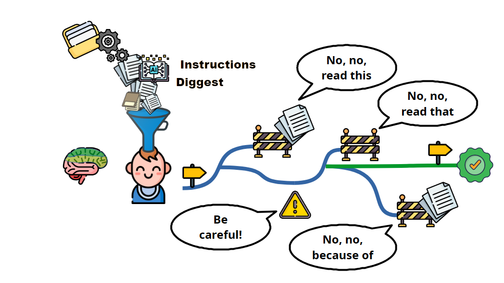
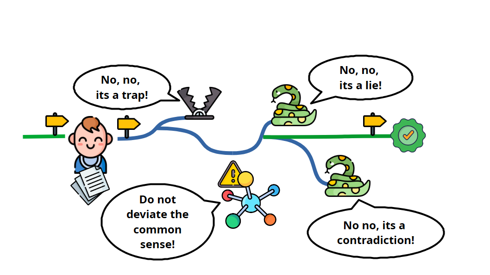
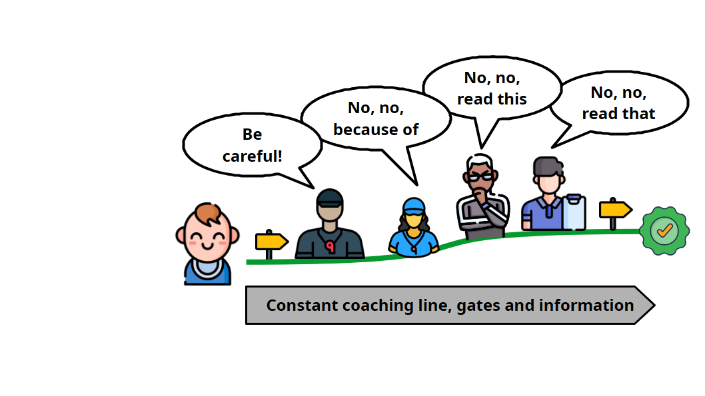
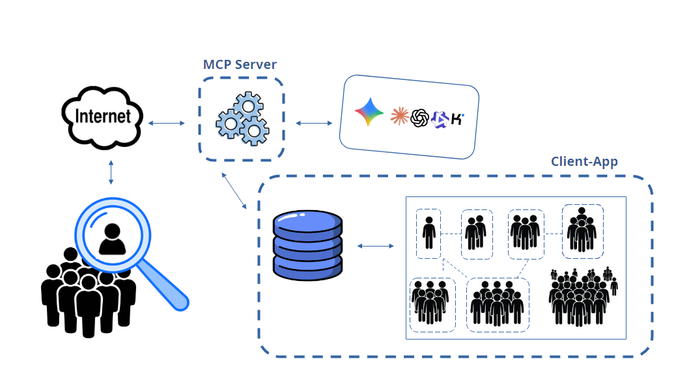
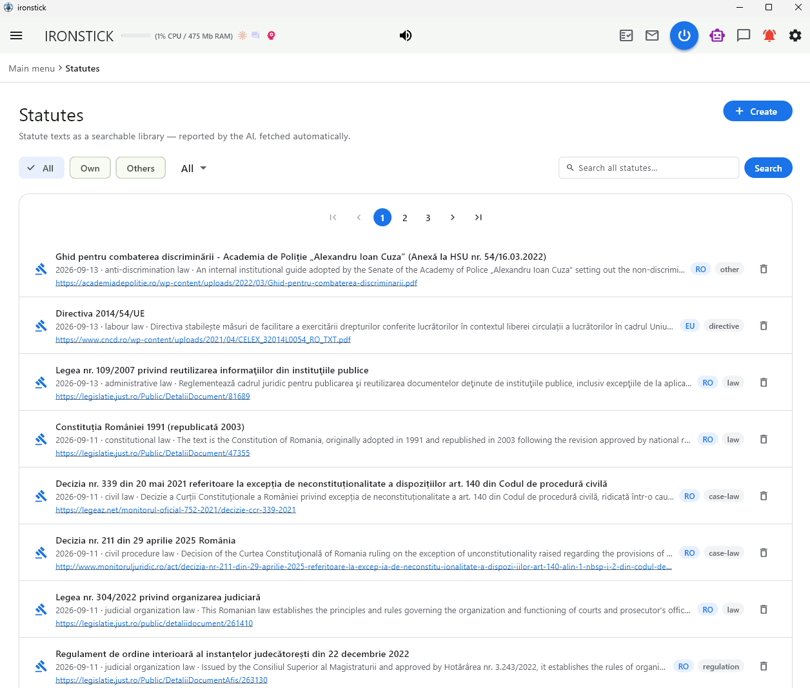

Bridge-handleiding — werken met AI: wat er op de achtergrond gebeurt, en acht werkprocessen van de start van de dag tot het onderzoek naar wetgeving.
Basisprincipes
1. AI-chat en Bridge — wat is het verschil?
IRONSTICK biedt u twee manieren om met AI aan uw dossiers te werken.
De AI-chat is in het programma ingebouwd: u schrijft in een IRONSTICK-venster, en IRONSTICK zelf stuurt het verzoek naar een externe AI-dienst – met de API-sleutels die uw kantoor in de AI-configuratie heeft vastgelegd.
De Bridge werkt andersom: u schrijft in de desktop-AI-app die u toch al gebruikt, en die app roept de IRONSTICK-tools via een connector live aan.
In beide gevallen bereikt de AI uw gegevens uitsluitend via IRONSTICK, via dezelfde tools en achter dezelfde poorten.
De geïntegreerde AI-chat
Eerst een lokale laag. Elk bericht doorloopt eerst een op regels gebaseerde laag die op uw computer draait – zonder AI-model en zonder internet. Eenvoudige verzoeken – een scherm, een cliënt of een zaak openen, eenvoudige zoekopdrachten – worden daar direct uitgevoerd. Alles wat overweging of formulering vereist, gaat door naar een externe AI-dienst.
Uw sleutels, uw diensten. De chat gebruikt de externe AI-diensten waarvoor in de AI-configuratie een API-sleutel is vastgelegd. Ze worden automatisch in een vaste volgorde gebruikt. Is er een niet bereikbaar of is het tegoed op, dan neemt de volgende hetzelfde verzoek over.
Eerst uw toestemming. Voordat de chat ook maar iets naar een externe AI-dienst stuurt, vraagt hij het u. Weigert u, dan wordt er niets verzonden, en de chat vraagt het pas opnieuw wanneer u van modus wisselt of de chat opnieuw opent.
Gepseudonimiseerd. Voordat een verzoek uw computer verlaat, worden namen van personen en ondernemingen, zaak- en zaaknummers, persoonlijke identificatienummers, IBAN's, telefoonnummers, e-mailadressen en adressen van partijen door neutrale plaatshouders vervangen. Het antwoord wordt op uw computer terugvertaald. Datums en bedragen blijven ongewijzigd. De plaatshouders worden gevormd uit uw eigen gegevensrecords; daarnaast worden nummers, e-mailadressen en telefoonnummers in vrije tekst herkend.
Gelogd. Elke aanroep van een externe AI-dienst wordt lokaal gelogd, en wel in de plaatshoudervorm waarin hij uw computer heeft verlaten.
Compact werkgeheugen. Bij elke beurt ontvangt de AI het recentste deel van het gesprek (ongeveer de laatste 6.000 tekens) en een korte samenvatting van het eerdere deel. Een verzoek loopt over maximaal acht toolrondes.
Waar het draait. Onder Windows en op de Android-tablet.
De Bridge
Drie onderdelen. Uw desktop-AI-app maakt via het Model Context Protocol (MCP) verbinding met een klein Bridge-programma op dezelfde computer. De Bridge leidt elke aanroep via een beveiligde verbinding, die alleen vanaf deze computer bereikbaar is, door naar de draaiende IRONSTICK-app. De app voert de tool uit en stuurt het resultaat langs dezelfde weg terug.
Het Bridge-programma kent geen gegevens. Het opent geen database en bevat geen eigen tools; het geeft aanroepen alleen door. Ook de werkinstructies voor de AI komen uit de draaiende app wanneer de desktop-AI verbinding maakt.
Alleen zolang IRONSTICK draait. Is de app gesloten, dan wordt elke toolaanroep beantwoord met de melding dat IRONSTICK niet draait en dat u het moet starten. De lijst met tools blijft in de desktop-AI zichtbaar, zodat de volgorde waarin u de twee programma's start geen rol speelt.
Echte gegevens. Toolresultaten bereiken de desktop-AI niet gepseudonimiseerd – echte namen, nummers en datums maken een indieningsklaar concept pas mogelijk. Wat de AI leest, wordt onder uw eigen account bij de aanbieder van de desktop-AI-app en volgens diens voorwaarden verwerkt.
Door u ingeschakeld. De Bridge werkt alleen als Connectortoegang door lokale desktop-AI toestaan in de AI-configuratie is ingeschakeld en de Bridge voor deze desktop-AI-app gelicentieerd is. De programmabesturing – schermen, zaken en documenten openen, exporteren – vereist een tweede schakelaar.
Meerdere tegelijk. De gelicentieerde desktop-AI-apps – Claude Desktop, ChatGPT Desktop, Qwen Desktop en Kimi Desktop – kunnen tegelijk verbonden zijn en aan dezelfde zaak werken. Elke app wordt, zolang hij werkt, met een eigen pictogram in de menubalk weergegeven.
Waar het draait. Onder Windows.
In vergelijking
AI-chat (geïntegreerd)
Bridge (desktop-AI-app)
Waar u schrijft
In het IRONSTICK-chatvenster
In uw desktop-AI-app
Wie met de AI-dienst communiceert
IRONSTICK, met uw eigen API-sleutels
Uw desktop-AI-app, met uw eigen account
Kosten van de AI
Op basis van gebruik door de AI-dienst op uw API-sleutel gefactureerd
Gedekt door het abonnement dat u al voor de desktop-AI-app hebt
IRONSTICK-licentie
Inbegrepen, geen extra licentie
Bridge-licentie per gebruiker / werkplek – één Bridge per desktop-AI-app of de bundel van alle Bridges
Naar de AI verzonden gegevens
Gepseudonimiseerd; datums en bedragen ongewijzigd
Echte gegevens, onder uw account bij de aanbieder verwerkt
Uw toestemming
Vóór het eerste externe verzoek van een chatsessie
Vóór de eerste gegevenstoegang door welke desktop-AI dan ook, bij elke programmasessie
Werkinstructies
Worden met elk verzoek meegestuurd
De AI moet ze lezen en vóór het openen van een tool een regel letterlijk bevestigen
Tools en poorten
Dezelfde tools en dezelfde poorten, plus een zoekfunctie in de eigen geschiedenis van de chat
Dezelfde tools en dezelfde poorten; programmabesturing alleen met de bijbehorende schakelaar
Duur van een werksessie
Recentste gesprek plus korte samenvatting; maximaal acht toolrondes per verzoek
Het gesprek van de desktop-AI-app
Platforms
Windows en Android-tablet
Windows
Waarom de Bridge geschikt is voor omvangrijk werk aan zaken
Geen kosten per aanroep via IRONSTICK. Complete dossiers lezen, honderden documenten doorwerken en in meerdere rondes ontwerpen – dat alles loopt via het abonnement dat u toch al voor de desktop-AI-app betaalt. Hetzelfde werk via de geïntegreerde chat wordt op basis van gebruik op uw API-sleutel gefactureerd, wat bij grote dossiers snel oploopt.
Langere werksessies. De desktop-AI voert zijn eigen, doorlopende gesprek — ideaal voor lange werksessies aan grote dossiers.
Grotere antwoorden per aanroep. Claude Desktop en ChatGPT Desktop ontvangen toolantwoorden van maximaal 40.000 tekens direct; Qwen Desktop, Kimi Desktop en de geïntegreerde chat ontvangen maximaal 10.000. Alles wat groter is, gaat volledig naar de versleutelde tussenopslag en wordt daar deelsgewijs gelezen.
De volledige toolset, de volledige tekst. De desktop-AI werkt met de volledige toolset en leest volledige teksten in zijn eigen gesprek, achter dezelfde poorten als de chat.
De chat behoudt zijn plaats. De geïntegreerde chat vereist geen extra licentie, is altijd bij de hand – ook op de tablet – en is het strenger gecontroleerde kanaal: gepseudonimiseerd, met toestemmingsvraag en gelogd.
2. Eén toolset — in de client-app
Elke handeling die een AI kan uitvoeren, bevindt zich in de IRONSTICK-client-app op uw computer – niet in de AI en niet in het Bridge-programma.
De AI-chat en elke verbonden desktop-AI roepen precies dezelfde tools aan. Elke aanroep wordt door de draaiende app tegen uw live database uitgevoerd, en alleen het resultaat gaat terug naar de AI.
Eén toolregister. De toolset wordt door één en dezelfde module voor de AI-chat en voor de Bridge opgebouwd: dezelfde tools, in dezelfde volgorde, achter dezelfde poorten. De tools zijn thematisch gegroepeerd in toolsets – zaak, bewijs, termijnen, wetten, brieven en e-mails en meer –, die de AI naar behoefte opent.
Eén weg erdoorheen. Elke toolaanroep, of die nu uit de chat of van een desktop-AI komt, loopt door dezelfde besturingslaag: het activiteitspictogram in de menubalk, de identificatie van de aanroeper, de poorten en de overdracht van grote resultaten aan de tussenopslag. Elke desktop-AI en elke API-dienst houdt een eigen logboek bij van wat zij heeft gelezen, zodat het lezen door de een nooit voor een ander telt.
De gegevens blijven in IRONSTICK. Uw dossier blijft in de IRONSTICK-database op uw computer. Een AI ontvangt alleen wat een tool voor de betreffende aanroep teruggeeft; IRONSTICK geeft haar noch de database noch de gegevensmap.
Live bij elke aanroep. De tools openen de database bij elke aanroep. Wat u opslaat, ziet de volgende toolaanroep.
Draait op de achtergrond. De tools draaien binnen de app op de achtergrond, zodat het programma ook bij lange leesprocessen van grote dossiers responsief blijft.
De app moet draaien. Zonder de draaiende app zijn er geen tools: het Bridge-programma geeft aanroepen alleen door en antwoordt dat IRONSTICK niet draait.
De app moet ontgrendeld zijn. Zolang de zescijferige beveiligingscode op het startscherm niet is ingevoerd, wordt elke toolaanroep van een desktop-AI beantwoord met de melding dat de applicatie vergrendeld is, en worden er geen gegevens teruggegeven. Voer de code in IRONSTICK in en herhaal daarna het verzoek.
De toegang wordt door u verleend. De Bridge bedient een desktop-AI alleen als de connectorschakelaar is ingeschakeld en deze desktop-AI gelicentieerd is. De eerste gegevenstoegang door welke desktop-AI dan ook na elke programmastart opent één enkel bevestigingsvenster. Keurt u goed, dan is de toegang voor alle gelicentieerde desktop-AI's voor de rest van de programmasessie open. Weigert u, dan wordt elke aanroep van elke desktop-AI 10 minuten lang afgewezen, en bij de volgende toegang daarna wordt het u opnieuw gevraagd. Deze beslissing wordt niet opgeslagen.
3. De poorten — wat er op de achtergrond gebeurt
Tussen de AI en uw gegevensrecords liggen poorten die in de toollaag van de client-app zijn ingebouwd. Het is eenvoudige programmalogica – geen AI die een andere AI controleert.
Wijst een poort een aanroep af, dan wordt er niets geschreven of geleverd; de AI ontvangt een melding die aangeeft wat ontbreekt en welke aanroep de poort opent.
De meeste poorten werken voor de AI-chat en voor elke desktop-AI op dezelfde manier; de laatste kolom toont waar elke poort geldt.
Poort
Wanneer hij in werking treedt
Wat hij doet
Geldt voor
Toestemming vóór externe AI
Wanneer in een chatsessie voor het eerst een verzoek naar een externe AI-dienst moet gaan
Een venster vraagt of de externe AI gebruikt mag worden. Weigert u, dan wordt er niets verzonden, en de chat vraagt het in deze sessie niet opnieuw.
AI-chat
Pseudonimisering
Elk verzoek van de AI-chat aan een externe AI-dienst
Namen, ondernemingen, zaak- en zaaknummers, identificatienummers, IBAN's, telefoonnummers, e-mailadressen en adressen van partijen verlaten de computer als plaatshouders en worden op uw computer terugvertaald. Datums en bedragen blijven ongewijzigd. Kan de lijst met plaatshouders niet volledig worden opgebouwd, dan wordt het verzoek niet verzonden.
AI-chat
Toestemming voor gegevenstoegang
De eerste toolaanroep van welke desktop-AI dan ook na de programmastart
Er verschijnt één gezamenlijk bevestigingsvenster voor alle desktop-AI's. Goedgekeurd: open voor de rest van de programmasessie. Geweigerd: elke aanroep wordt 10 minuten lang afgewezen, daarna wordt het u opnieuw gevraagd.
Bridge
Startvergrendeling
Elke toolaanroep zolang de zescijferige beveiligingscode niet is ingevoerd
De aanroep wordt beantwoord met de melding dat de applicatie vergrendeld is; er worden geen gegevens teruggegeven.
Bridge
Instructiegrendel
Elke toolaanroep van een desktop-AI
Alle tools behalve het lezen van de instructies, de bevestiging ervan en het opvragen van de systeemtaal blijven gesloten totdat de AI de instructies heeft gelezen en de regel tegen verzonnen feiten letterlijk heeft teruggegeven. De bevestiging vervalt 60 minuten nadat ze is gegeven, na 2 uur zonder aanroep, om middernacht, bij elke nieuwe verbinding en – waar IRONSTICK het gespreksverloop kan inzien – wanneer de desktop-AI zijn gesprek comprimeert; dan moet de AI opnieuw lezen en een willekeurig gekozen regel letterlijk teruggeven. In de AI-chat worden de instructies in plaats daarvan met elk verzoek meegestuurd.
Bridge
Datumpoort
Tools die gedateerde inhoud schrijven – kroniek, agenda, dagnotities, dagjournaal, geheugen, wetsmeldingen en meer
De aanroep wordt afgewezen, tenzij de AI binnen de laatste 30 minuten de werkelijke actuele datum en tijd heeft opgevraagd.
Beide
Eerst de zaak lezen
Tools die zaakgegevens lezen (kroniek, tijdlijn, zoekopdrachten, volledige teksten en meer), en tools die in een zaak schrijven (notities, kroniekvermeldingen, controle van processtukken, export, overdracht aan een andere AI)
Tools die de inhoud van een zaak lezen, worden afgewezen totdat de AI de digest van deze zaak heeft gelezen. Een notitie of een kroniekvermelding vereist daarnaast het zaakprofiel, de jurisdictie en de nieuwste kroniekvermeldingen. Een controle van een processtuk, een export of een overdracht vereist bovendien dat de nieuwste documenten van de zaak volledig zijn gelezen. De afwijzing somt op wat nog ongelezen is.
Beide
Alleen schrijven op basis van wat gelezen is
Geheugenvermeldingen, wijzigingen aan een Snake, werk aan concepten, de controle van processtukken en de oplevering bij een zaak
Een geheugenvermelding bij een zaak wordt alleen aanvaard als de digest is gelezen en elk daarin geciteerd document in deze sessie volledig is gelezen. Elk zoekresultaat in een bestand in de tussenopslag draagt de aantekening dat zoektreffers geen lezen zijn, samen met de nog ongelezen documenten achter de treffers. Heeft de AI in een zaak een document van de wederpartij of van een overheidsinstantie geopend, dan wordt er in deze zaak niets meer geschreven totdat dit document volledig is gelezen.
Beide
Eerst Nucleu
Processtuk schrijven, controleren en opleveren
Afgewezen totdat elke actuele Nucleu van de zaak – de zaak-Nucleu en de Nucleu van elk feitencomplex waartoe de zaak behoort – in de actuele versie is gelezen. De laatste ronde van de controle van het processtuk vergelijkt het document met de Nucleu.
Beide
Snake-poort
In de controle van het processtuk, kort vóór de Nucleu-ronde, wanneer de zaak of een andere zaak van haar feitencomplexen een Snake heeft
De AI moet u vragen of de Snake-ronde moet worden uitgevoerd, en gaat pas na uw antwoord verder – of meteen, als u daarom bij het geven van de opdracht hebt gevraagd. Zegt u ja, dan moet elke Snake-vermelding met motivering als overgenomen, verworpen of niet relevant worden afgehandeld.
Beide
Eerst de wettenbibliotheek
Een webzoekopdracht of het opvragen van een webpagina die een wet betreft (artikel- of paragraafnummers, namen van wetten, wetnummers, wettenportalen)
Afgewezen totdat de AI uw wettenbibliotheek naar deze norm heeft doorzocht. Heeft de bibliotheek deze, dan blijft het web voor deze norm gesloten en citeert de AI uit de bibliotheek. Alleen als de bibliotheek geen treffer heeft, wordt het web voor deze norm geopend – gedurende 15 minuten.
Beide
Wetsbronnen melden — geopend, geen snippets
Een webzoekopdracht over wetgeving of een geopende pagina van een wettenportaal die een wetsbron oplevert, en elke melding van een nieuwe wetsbron
Elk volgend toolantwoord begint met de herinnering om de bron te melden, totdat deze gemeld is (maximaal 15 minuten). Een melding wordt alleen aanvaard voor een pagina die de AI binnen de laatste 24 uur zelf met de IRONSTICK-paginatool heeft geopend. Gemelde bronnen wachten in een toestemmingsvenster: aangevinkte bronnen worden opgehaald, gecontroleerd en in de bibliotheek opgeslagen, niet-aangevinkte worden geweigerd.
Beide
Geheugen alleen met uw goedkeuring
De AI slaat een geheugenvermelding op, wijzigt of verwijdert deze
Een venster toont u de vermelding. Deze wordt alleen opgeslagen, gewijzigd of verwijderd als u dat toestaat; geweigerde vermeldingen worden verworpen. Zolang het venster open is, wordt elke andere aanroep van deze sessie afgewezen. Afgezien van overdrachtstaken tussen AI's en uw eigen notities leest de AI alleen de geheugenvermeldingen die u hebt goedgekeurd.
Beide
Voorstellen in plaats van schrijven
De AI wil stamgegevens wijzigen, een persoon of instelling toevoegen, een relatie toevoegen, een persoonsanalyse invullen, dubbele records samenvoegen of een record verwijderen
De tool schrijft niets in uw gegevensrecords. Hij plaatst een voorstel in de monitor voor gegevensconsistentie, waar u het overneemt of weigert.
Beide
Geheime documenten uitgesloten
Elke AI-tool die documenten, media, termijnen of een volledige zaak leest, en de achtergronddiensten die externe AI gebruiken (monitor voor gegevensconsistentie, situatierapport)
Als geheim gemarkeerde vermeldingen worden uit elke AI-tool en elke dienst gefilterd en niet aan de AI doorgegeven.
Beide
Slagingskansen alleen op basis van het procesdossier
De AI-beoordeling van een zaak, gestart in de app of door een desktop-AI
De inschatting van de slagingskansen berust uitsluitend op het zaakprofiel en de documenten van de zaak die naar de in het inleidende processtuk aangesproken rechtbank of instantie zijn gegaan of daarvandaan kwamen – van beide zijden, zonder producties. Zonder inleidend processtuk of zonder herkende rechtbank of instantie worden de slagingskansen als niet in te schatten gemarkeerd, en blijft de weergave leeg.
Beide
Controle vóór oplevering
Oplevering van een formeel document zoals een processtuk
De oplevering wordt afgewezen zonder een vers positief resultaat van de deterministische controle van het processtuk voor precies deze dossierstand; elke bewerking maakt het ongeldig. Wat het systeem verlaat, is een indieningsklaar concept ter controle en ondertekening door u.
Beide
Werkprocessen
Werkproces 1 — Start van de dag
De start van de dag beantwoordt drie vragen voordat u begint: wat er vervalt, wat er is binnengekomen en waar u was gebleven.
Eén stap maakt de samenvatting bij de sessiestart – met datum, herinneringen, termijnen en afspraken van de komende drie dagen en openstaande taken. Daarna haalt de AI de volledige termijnenlijst, de afspraken van vandaag en wat vandaag of gisteren is geregistreerd op.
Gebruik dit elke ochtend en telkens wanneer u een nieuw gesprek met een desktop-AI begint.
Start, agenda en heatmap: termijnen, afspraken en nieuwe vermeldingen van de dag in één oogopslag.
Stap 0 — Context scheppen
IRONSTICK starten en ontgrendelen. De tools werken alleen zolang de app draait en nadat de zescijferige beveiligingscode is ingevoerd.
Uw eigen briefing in de app. Onder Windows vraagt de eerste start van de dag of IRONSTICK u over de dag moet briefen. Zegt u ja, dan wordt de briefing weergegeven met aanklikbare regels die naar de termijnen, de agenda, de postbus, de documenten en de zaak leiden, en daarnaast hardop voorgelezen.
Desktop-AI: een nieuw gesprek. Begin in uw desktop-AI-app een nieuw gesprek. Keur het venster voor gegevenstoegang goed dat IRONSTICK bij de eerste toegang door welke desktop-AI dan ook na de programmastart toont.
AI-chat. Open de AI-chat in IRONSTICK; de werkinstructies worden met elk verzoek meegestuurd.
Geen zaak nodig. De start van de dag omvat alle cliënten en zaken. Open een zaak alleen als uw vraag op die zaak betrekking heeft.
Wat u zegt — stap voor stap
Start de sessie.
De AI leest en bevestigt haar instructies, legt de datum van vandaag vast en laadt de samenvatting bij de sessiestart: herinneringen, termijnen en afspraken van de komende drie dagen, openstaande taken.
Wat vervalt er vandaag en in de komende drie dagen?
U ontvangt termijnen, zittingen en afspraken in datumvolgorde, telkens met de bijbehorende zaak.
Wat is er sinds gisteren binnengekomen?
Nieuwe e-mails en nieuw geregistreerde documenten, telkens met de zaak waaraan ze zijn toegewezen.
Lees de nieuwe e-mail in zaak [zaaknummer] en vertel me wat er van mij wordt verlangd.
Eerst wordt de volledige tekst gelezen; u ontvangt de inhoud, de openstaande punten en een voorstel voor de volgende stap.
Neem het telefoongesprek van vandaag met [persoon] over [onderwerp] op in het dagjournaal.
De vermelding wordt met datum en tijd in het dagjournaal van vandaag opgenomen.
Wat er op de achtergrond gebeurt
Poorten vóór de eerste tool. Zolang de beveiligingscode niet is ingevoerd, wordt elke toolaanroep van een desktop-AI beantwoord met de melding dat de applicatie vergrendeld is. De eerste gegevenstoegang door welke desktop-AI dan ook na de programmastart opent het toestemmingsvenster; na goedkeuring blijft de toegang voor alle desktop-AI's voor de rest van de programmasessie open. Voordat een andere tool opengaat, moet de desktop-AI de werkinstructies lezen en een regel letterlijk teruggeven.
Sessiestart in één stap. Via de Bridge maakt het openen van de toolset voor de sessiestart de samenvatting bij de sessiestart aan. Datum en tijd, de systeemtaal en het geopende scherm komen direct terug; de volledige samenvatting wordt in de versleutelde tussenopslag geplaatst, waar de AI haar leest.
Wat de samenvatting bevat. Vervallen geheugenherinneringen (vandaag en achterstallig), die de AI als eerste afhandelt; voor welke cliënten het gemeenschappelijke AI-geheugen kennis bevat; het ene datumanker; de systeemtaal, die tevens de gesprekstaal is; het huidige scherm; de lijst van de laatste tien dagjournaals; binnen drie dagen vervallende termijnen en afspraken, hoogstens tien regels per rubriek; openstaande taken die een andere AI heeft achtergelaten. Elk onderdeel is begrensd, en een begrensd onderdeel vertelt de AI waar zij de volledige versie kan opvragen.
Wachtende rechterlijke beslissingen. Bij de eerste sessiestart van de dag, als rechterlijke beslissingen nog niet zijn beoordeeld, geeft de samenvatting de AI de opdracht u direct te vragen of ze nu moeten worden beoordeeld. Ja: de AI handelt ze één voor één af. Nee: zij gaat verder met uw taak.
De volledige termijnenlijst. De termijnenlijst levert alles wat op het termijnenscherm van IRONSTICK staat, gesorteerd op datum: termijnen bij documenten, aanstaande zittingen uit de rechtbankportalen en de agenda, en termijnen die de AI bij haar eigen geheugennotities heeft gezet, als zodanig gemarkeerd. De lijst kan worden beperkt tot kritiek (achterstallig en vandaag), binnenkort (tot 10 dagen, achterstallige inbegrepen), vandaag, deze week, volgende week of een datum. Via de Bridge levert het openen van de toolset voor termijnen dezelfde volledige lijst plus de afspraken van vandaag.
Afspraken. De afsprakenlijst toont de afspraken van een dag of periode in deze volgorde: zittingen uit de rechtbankportalen, zittingen uit de agenda, daarna de overige agenda-items.
Wat er is binnengekomen. Twee lijsten tonen elke vermelding die vandaag of gisteren over alle cliënten en zaken heen is geregistreerd; bepalend is de dag van registratie, niet de datum van de gebeurtenis. Via de Bridge somt het openen van de toolset voor correspondentie en e-mail de vandaag geregistreerde documenten en de inkomende e-mails van vandaag op, telkens maximaal tien.
De dagbriefing voor de AI. De AI kan de inhoud van de dagbriefing opvragen met documentnummers en markeringen: termijnen van de komende 30 dagen, kritieke en vandaag afgehandelde, zittingen en afspraken van vandaag, ongelezen post, vandaag geregistreerde documenten, zittingen van morgen, verjaardagen, weer opgelaaide zaken, weekstatistiek en het recentste AI-journaal. Een afzonderlijke controle legt voor elke desktop-AI apart vast of zij vandaag is gebriefd; zo niet, dan levert deze de recentste dagjournaals en noteert dat zij is gebriefd.
Een nieuw document lezen. De lezer voor volledige teksten levert de geëxtraheerde volledige tekst van een vermelding. De werkinstructies vertellen de AI dat een titel of een lijstregel geen bewijs is van wat een vermelding documenteert: voordat zij aangeeft wat een vermelding inhoudt, leest zij de volledige tekst in de huidige sessie en houdt zij wat de bron aantoont gescheiden van wat een partij of een gevolgtrekking suggereert.
Vragen over een zaak. De kroniek van een zaak, haar termijnen en haar agenda zijn zaakgegevens: ze worden afgewezen totdat de AI de digest van deze zaak en daarna haar zaakgeheugen heeft gelezen. De globale lijsten over alle zaken heen zijn zonder dat toegankelijk. De kroniek kan op datum worden gefilterd; een datum komt overeen met de vermeldingsdatum of de datum van het document.
Aanbod om het in IRONSTICK te tonen. Na een termijnen- of afsprakenlijst kan de AI aanbieden de vermelding in het IRONSTICK-venster te openen. Zij navigeert pas nadat u hebt ingestemd, en alleen als de programmabesturing in de AI-configuratie is ingeschakeld.
Werkproces 2 — Algemene gespreksregels
Deze regels gelden voor elk gesprek met de AI, in de geïntegreerde chat en via de Bridge: hoe een sessie begint, welke taal de AI spreekt, waar haar feiten vandaan mogen komen en hoe u haar bronnen controleert.
Bij elke regel hoort de zin waarmee u deze toepast: gelezen en bevestigde instructies, antwoorden die hun bronnen noemen, volledige teksten die vóór een antwoord tot het einde zijn gelezen.
Lees dit vóór uw eerste echte werksessie; dezelfde regels dragen elk ander werkproces.

Een onderbouwd gesprek: de AI leest wat zij moet lezen voordat zij antwoordt — en u controleert de bronnen zelf.
Stap 0 — Context scheppen
IRONSTICK eerst starten en ontgrendelen. Zonder de draaiende app antwoordt de Bridge dat IRONSTICK niet draait; zolang de zescijferige beveiligingscode niet is ingevoerd, wordt elke toolaanroep beantwoord met de melding dat de applicatie vergrendeld is.
De sessie starten. Begin in uw desktop-AI een nieuw gesprek en vraag haar de sessie te starten. Het openen van de toolset voor de sessiestart maakt de samenvatting bij de sessiestart aan: de datum, de systeemtaal, het geopende scherm, vervallen herinneringen, te beoordelen openstaande rechterlijke beslissingen, termijnen en afspraken van de komende drie dagen, de laatste tien dagjournaals en openstaande overdrachtstaken.
Let op het AI-pictogram in de bovenste balk. Het uitklapmenu ervan toont bij een desktop-AI of de instructies zijn bevestigd (groen vinkje of rood kruis), hoe vaak ze zijn gelezen en hoeveel regelovertredingen er waren; voor elke zaak die de AI heeft aangeraakt, toont het profiel, jurisdictie en digest als gelezen of niet gelezen, plus een balk met de gelezen documenten.
In de geïntegreerde chat maken de werkinstructies deel uit van elk verzoek; er valt niets te bevestigen. Voordat het eerste verzoek naar een externe AI-dienst gaat, vraagt IRONSTICK om uw toestemming.
Geef het meest precieze aanknopingspunt dat u hebt. Een bewijsnummer gaat boven een naam, een naam gaat boven een trefwoord, en een zaaknummer vertelt de AI welk dossier zij moet lezen.
Start de sessie. Lees daarna de digest en het zaakgeheugen van zaak [zaaknummer] en vertel me wat er openstaat.
De regels — en wat u zegt om ze toe te passen
Start de sessie.
Regel 1 — de AI leest en bevestigt haar instructies voordat zij zaakgegevens aanraakt, en antwoordt in uw systeemtaal.
Citeer regel [nummer] van je instructies.
Regel 2 — elke regel kan letterlijk worden weergegeven, zodat u de AI eraan kunt houden.
Welk document zegt dat? Geef me het bewijsnummer.
Regel 3 — elke bewering draagt haar bron; een klik op het nummer opent het document.
Lees [#bewijsnummer] volledig voordat je antwoordt.
Regel 4 — titels en korte beschrijvingen zijn geen feiten; het antwoord berust op de volledige tekst.
Scheid wat bewezen is van wat alleen wordt vermoed.
Regel 5 — de AI markeert inschattingen en vermoedens als zodanig en geeft alleen weer wat de bronnen documenteren.
Lees het hele document, niet alleen de zoektreffers.
Regel 6 — lange documenten worden tot het einde gelezen; de AI meldt wanneer elke regel is gelezen.
Wat er op de achtergrond gebeurt
Instructiegrendel (Bridge). Zolang de desktop-AI de werkinstructies niet heeft gelezen en de regel tegen verzonnen feiten niet letterlijk heeft teruggegeven, wordt elke tool afgewezen, behalve het lezen van de instructies, de bevestiging ervan en het opvragen van de systeemtaal. De AI die heeft gelezen, moet zelf bevestigen; een in een ander gesprek gegeven bevestiging opent de grendel voor haar niet.
Opnieuw lezen. De bevestiging vervalt 60 minuten nadat ze is gegeven, na twee uur zonder aanroep, om middernacht en bij elke nieuwe verbinding; waar IRONSTICK het gespreksverloop van de desktop-AI kan inzien, ook wanneer de desktop-AI dit gesprek comprimeert. Dan leest de AI opnieuw en geeft een willekeurig gekozen regel letterlijk terug – een korte pauze, geen fout.
Regelbewaking. De programmalogica let op kortere wegen, zoals toolaanroepen vóór het lezen van de instructies of een bestand dat buiten de opleveringsweg om wordt geschoven. Wordt er een herkend, dan zijn alle tools geblokkeerd en wordt de reden genoemd; afhankelijk van de teller reciteert de AI de regel tegen verzonnen feiten of leest zij de instructies opnieuw en geeft zij de regel terug die in de afwijzing wordt genoemd. De teller is zichtbaar in het uitklapmenu bij het AI-pictogram.
Eén gesprekstaal. De AI antwoordt de hele sessie in de IRONSTICK-systeemtaal, ongeacht in welke taal u schrijft. Processtukken, e-mails aan de rechtbank en kroniekvermeldingen worden opgesteld in de taal van de jurisdictie van de zaak; het dagjournaal in de gesprekstaal.
Feiten uit tools, uit deze sessie. De instructies staan zaakfeiten alleen toe uit de IRONSTICK-tools, opgevraagd in de huidige sessie – niet uit het geheugen van de AI, eerdere berichten, trainingsdata, gedownloade bestanden of een andere connector. Wat niet kan worden opgevraagd, wordt als lacune benoemd en nooit door een gevolgtrekking opgevuld.
Eerst onderzoeken. De AI heeft de opdracht nooit te vragen wat de tools kunnen beantwoorden: bij een zaaknummer leest zij, in plaats van te vragen welk dossier u bedoelt.
Titels en samenvattingen zijn geen feiten. Voordat de AI beweert wat een vermelding documenteert, moet zij de volledige tekst van de vermelding in de huidige sessie lezen; wat een titel, een partij of een gevolgtrekking suggereert, moet als vermoeden worden gemarkeerd. Een vermelding zonder geëxtraheerde tekst levert geen inhoudelijke uitspraak op.
Zoektreffers zijn geen lezen. Elk zoekresultaat in een bestand in de tussenopslag draagt de aantekening dat treffers geen lezen zijn, samen met de nog ongelezen documenten achter de treffers. Bij zaakdumps noemt een waarschuwing over de leesdekking elk bestand dat niet tot het einde is gelezen, met het percentage en de ongelezen regelbereiken; deze verschijnt in latere antwoorden opnieuw totdat de lacunes zijn gelezen.
De leesstand in de antwoorden. Veranderen de leescijfers, dan bevatten de toolantwoorden dezelfde cijfers die u in het uitklapmenu bij het AI-pictogram ziet, met de instructie een zaak, haar bewijsstukken of haar geheugen nooit als volledig gelezen aan te duiden, tenzij deze cijfers dat tonen.
Eerst digest en geheugen lezen. Zaakgegevens zijn pas beschikbaar nadat de zaakdigest is gelezen; voor een zaaktaak wordt eerst het volledige zaakgeheugen gelezen.
Alleen het eigen lezen telt. Voor de beoordeling van de zaak controleert IRONSTICK elke leesactie aan de hand van het eigen gespreksverloop van de desktop-AI; wat hulpagenten hebben gelezen, telt niet.
Bronnen die u kunt controleren. De AI noemt elk document met zijn bewijsnummer. In de geïntegreerde chat wordt een nummer alleen een link als deze vermelding in uw gegevensrecords bestaat en niet verwijderd of geheim is; een klik opent haar in de kroniek van de zaak. Een nummer zonder zo'n vermelding blijft gewone tekst. Zoek het nummer bij een desktop-AI op in IRONSTICK of vraag de AI deze vermelding volledig te lezen.
Wetten uit de bibliotheek. Wetten worden eerst in uw wettenbibliotheek gecontroleerd; het web gaat voor een norm alleen open als de bibliotheek geen treffer heeft, en alleen pagina's die via de IRONSTICK-paginatool zijn geopend, gelden als gelezen.
Gedateerde schrijfacties vereisen de datum van vandaag. Tools die gedateerde inhoud schrijven, worden afgewezen, tenzij de AI binnen de laatste 30 minuten de werkelijke datum en tijd heeft opgevraagd. In de Bridge beginnen de antwoorden van de AI met deze datum.
Na een lang gesprek. Wat gelezen is, blijft voor de betreffende zaak geteld wanneer de desktop-AI haar gesprek comprimeert; de Nucleu van een zaak moet opnieuw worden gelezen. Om een zaak weer op te pakken, kan de AI digest, Nucleu, zaakgeheugen en Snakes in een werkbestand laden.
Grote documenten. Grote toolantwoorden gaan volledig naar de versleutelde tussenopslag en worden deelsgewijs gelezen, waarbij de leesdekking per regel wordt gevolgd.
Werkproces 3 — Beoordeling van de zaak
De beoordeling van de zaak is de visie van de AI als senior analist op een zaak, opgeslagen in IRONSTICK en weergegeven op het tabblad AI-beoordeling van de zaak.
De slagingskansen worden uitsluitend op basis van het procesdossier ingeschat: van wat naar de in het inleidende processtuk aangesproken rechtbank of instantie is gegaan of daarvandaan kwam.
De beschrijvende onderdelen berusten op het volledige IRONSTICK-dossier en op de naburige zaken van de cliënt.
Gebruik haar wanneer een zaak verder is gekomen, wanneer de laatste beoordeling oud is of wanneer een desktop-AI volgens dezelfde criteria als de app een nieuwe beoordeling moet opstellen.
De beoordeling van de zaak leest het dossier en toont de slagingskans met bewijspositie, hoofdvordering en overige vorderingen.
Stap 0 — Context scheppen
De zaak openen of noemen. Open de zaak in IRONSTICK: de AI kan zien welk scherm en welke zaak u hebt geopend. U kunt ook het zaaknummer noemen; de AI vindt de zaak aan de hand van haar nummer.
Het inleidende processtuk moet in het dossier zitten. De prognose vereist het document waarmee de procedure is ingeleid, bijvoorbeeld de dagvaarding, opgeslagen met de geëxtraheerde tekst. Het kan ook in een andere zaak van dezelfde cliënt liggen, bijvoorbeeld in de zaak waarvan deze is afgesplitst.
De rechtbank moet geregistreerd zijn.IRONSTICK herkent de rechtbank of de instantie alleen als deze onder uw instellingen is geregistreerd en de naam ervan in de adressering van het inleidende processtuk staat. Ontbreekt deze, dan blijft de weergave van de slagingskans leeg.
In de app of door een desktop-AI. Op het tabblad AI-beoordeling van de app kunnen alleen zaken met de status Actief worden beoordeeld. Een desktop-AI kan elke zaak beoordelen, ongeacht haar status en ook als er niets nieuws is binnengekomen.
Wat u zegt — stap voor stap
Open zaak [zaaknummer] en vertel me de stand van de laatste beoordeling.
De AI laadt de zaak en vat de opgeslagen beoordeling samen, inclusief de datum ervan.
Stel een nieuwe beoordeling op van zaak [zaaknummer].
Het procesdossier wordt samengesteld, de documenten worden gelezen, en de beoordeling wordt in vaste fasen geschreven; het resultaat verschijnt op het tabblad AI-beoordeling.
Waarom zijn de slagingskansen niet hoger?
U ontvangt de punten in het procesdossier die tegen u pleiten, telkens met het bewijsnummer.
Welke documenten in mijn dossier zouden helpen, maar liggen nog niet bij de rechtbank?
De AI vergelijkt uw volledige dossier met het procesdossier en noemt wat daar nog ontbreekt.
Houd rekening met [#bewijsnummer] en beoordeel opnieuw.
Uw commentaar wordt doorgegeven, en de beoordeling wordt daarmee vernieuwd.
Wat er op de achtergrond gebeurt
Eerst de laatste beoordeling. De beoordelingslezer levert de recentste beoordeling van de zaak. De eerste regel noemt de datum, de ouderdom en of het een volledige beoordeling of een actualisering was, en de AI heeft de opdracht aan te geven wanneer de laatste beoordeling is opgesteld. Zoals elke tool die zaakgegevens leest, wordt hij afgewezen totdat de AI de zaakdigest en daarna het zaakgeheugen heeft gelezen.
Eén tool, zes fasen. Een desktop-AI stelt een nieuwe beoordeling alleen op met de eigen beoordelingstool. Elke aanroep levert alleen de actuele fase; de volgende fase wordt pas vrijgegeven nadat IRONSTICK de actuele heeft gecontroleerd. Geen enkele fase kan worden overgeslagen. Beoordeelt de app op hetzelfde moment dezelfde zaak, dan wijst de tool af totdat de app klaar is.
Fase 1 — Inleidend processtuk. De AI leest de pdf's van de zaak, te beginnen met de oudste, en meldt het inleidende processtuk als zeker, onzeker of “geen gevonden”. Gecontroleerd wordt: elk gemeld document hoort bij deze cliënt en is in deze sessie volledig gelezen; “geen gevonden” wordt alleen aanvaard als elke pdf van de zaak volledig is gelezen. Een als zeker gemeld document wordt voor latere beoordelingen opgeslagen.
Poort: procesdossier.IRONSTICK zoekt een onder uw instellingen geregistreerde rechtbank of instantie in de adressering bovenaan de eerste pagina van het inleidende processtuk of als geadresseerde op deze pagina. Het procesdossier bestaat dan uit het inleidende processtuk en elk inkomend en uitgaand document van de zaak waarvan de tegenpartij in de correspondentie deze rechtbank of instantie is – van beide partijen, zonder producties en zonder geheime of verwijderde vermeldingen.
Fase 2 — Stand van het procesdossier en prognose. De AI moet elk document van het procesdossier zelf volledig lezen en daarna het prognosegedeelte indienen: een percentage, de bijbehorende band (duidelijk verloren, eerder verloren, open, eerder gewonnen, duidelijk gewonnen), de stand van het procesdossier, de bewijspositie, de hoofdvordering, de overige vorderingen, de verandering ten opzichte van de vorige prognose en de motivering. Gecontroleerd wordt: elk document van het procesdossier gelezen; het percentage ligt binnen de band; elke regel is aanwezig; de stand van het procesdossier en de motivering citeren alleen documenten uit het procesdossier; deze regels zijn in de systeemtaal opgesteld; een verandering van meer dan 10 punten ten opzichte van de vorige prognose noemt de nieuwe documenten die haar rechtvaardigen.
Geen procesdossier — wat de AI u meedeelt. Zonder inleidend processtuk of zonder herkende rechtbank of instantie in de adressering is er geen procesdossier. IRONSTICK geeft de AI dan de opdracht u direct en vóór het verdergaan in de gesprekstaal te informeren dat er geen prognose wordt opgesteld en de weergave van de slagingskans leeg blijft – met vermelding van de reden en, indien aanwezig, het inleidende processtuk. De fase wordt dan alleen met de zaak doorlopen, en de stand van het IRONSTICK-dossier treedt in de plaats van de prognose.
Fasen 3 en 4 — Lezen. Fase 3 somt de nieuwste inkomende en uitgaande pdf's van de zaak en het opgeslagen inleidende processtuk op; fase 4 somt elk document van de overige zaken van de cliënt op dat met deze zaak is gekoppeld. Elk moet volledig worden gelezen; samenvattingen, titels en zoektreffers zijn geen lezen. Een resultaat dat naar de tussenopslag is gegaan, telt alleen als elk deel is gelezen.
Leesstand.IRONSTICK houdt per zaak een leesregister bij: hoeveel documenten van de zaak de AI volledig heeft gelezen en of zij de digest en het zaakgeheugen heeft gelezen. Dat zijn dezelfde cijfers die u ziet, en ze komen met de antwoorden mee zodra ze veranderen. De AI is meegedeeld dat zij de enige geldige basis zijn voor elke uitspraak over wat zij heeft gelezen, en dat zij een zaak of de documenten ervan alleen “volledig gelezen” mag noemen als de cijfers dat tonen.
Alleen het eigen lezen van de AI telt.IRONSTICK controleert elke leesactie aan de hand van het gespreksverloop van deze desktop-AI; wat subagenten of parallelle agenten hebben gelezen, wordt niet geteld. Waar het gespreksverloop van een verbinding niet kan worden ingezien, zegt het antwoord dat, en heeft de AI de opdracht u te informeren dat deze controle niet mogelijk was.
Fase 5 — Feitendigest. De AI dient haar digest in met de koppen kernfeiten, gedocumenteerde feiten en sleutelcitaten, tegenstrijdigheden, lacunes en verzuimde termijnen, zaakoverstijgende verbanden en de geadresseerden. Gecontroleerd wordt: elke kop is aanwezig en ingevuld; de kernfeiten citeren documenten; elke naburige zaak is benoemd; elk geciteerd document is volledig gelezen.
Fase 6 — Schrijven. Pas nu ontvangt de AI de schrijfregels. De onderdelen zijn grondslag, stand van het IRONSTICK-dossier, kritische opmerking, sterke punten, risico's, zaakoverstijgende samenhang en – als IRONSTICK verwante zaken van andere cliënten heeft gevonden – deze zaken als laatste onderdeel. De stand van het IRONSTICK-dossier berust op de digest van elk document, en de AI leest elk belangrijk document volledig. Gecontroleerd wordt: de onderdelen en hun volgorde; de grondslag noemt het inleidende processtuk; hoogstens zes punten elk onder sterke punten en risico's; elk geciteerd document bestaat in de dossiers van deze cliënt of in het materiaal, is niet geheim of verwijderd en is volledig gelezen; het zaakoverstijgende onderdeel noemt elke naburige zaak.
Afwijzing. Mislukt een controle, dan begint het antwoord met REJECTED en een genummerde lijst van fouten. Niets gaat verder en niets wordt opgeslagen; de AI corrigeert precies deze punten en roept opnieuw aan. Een in de verkeerde fase ingediend deel wordt afgewezen. De AI kan de keten met vers materiaal opnieuw bij fase 1 beginnen, en een herstart van de app begint haar eveneens van voren af aan.
Opslaan. Wordt fase 6 aanvaard, dan voegt IRONSTICK de prognose uit fase 2 – waar er een procesdossier is – na de grondslag in en slaat de beoordeling op als nieuwe volledige beoordeling. Het toont dan de zaak op het tabblad AI-beoordeling, en de AI heeft de opdracht u mee te delen dat de nieuwe beoordeling is opgeslagen.
Op het tabblad AI-beoordeling. De stand van het procesdossier staat naast de weergave van de slagingskans, met de band, de bewijspositie, de hoofdvordering en de overige vorderingen. Zonder procesdossier schuift de stand van het IRONSTICK-dossier naar de tweede plaats, en blijft de weergave ernaast leeg.
De beoordeling in de app. Op het tabblad zelf vraagt u een beoordeling aan voor een actieve zaak. Het tabblad vraagt om toestemming voordat het een externe AI-dienst gebruikt; de uitvoering loopt daarna op de achtergrond door, ook als u van tabblad of scherm wisselt – via de tekstherkenning van nieuwe documenten, onderzoek, schrijven en de prognose. Een bestaande beoordeling kan binnen een dag na de laatste volledige herbeoordeling worden geactualiseerd, hoogstens drie keer achter elkaar. Is er sinds de laatste beoordeling niets nieuws binnengekomen, dan gaat een herbeoordeling pas open nadat u in het bezwaarveld een commentaar van minstens drie woorden hebt geschreven.
Werkproces 4 — Een Nucleu opstellen
Een Nucleu is de bindende koers van een zaak: de kernlijn van de argumentatie, de leidende feiten en bewijzen, wat gezegd moet worden en wat nooit gezegd mag worden.
Hij bestaat op twee niveaus — eenmaal voor een volledig feitencomplex, geldig voor elke zaak daarin, en eenmaal voor de afzonderlijke zaak — en elk document dat de AI voor de zaak schrijft, is eraan ondergeschikt.
Het beste moment om hem op te stellen is direct na een beoordeling van de zaak, zolang de hele zaak nog in de werkcontext van de AI staat.
De AI ontwerpt hem, IRONSTICK toont u elke wijziging, en pas uw goedkeuring slaat hem op als nieuwe versie.
De Nucleu op het tabblad met het atoompictogram: de AI ontwerpt en stelt voor, u neemt over; elke overgenomen wijziging wordt een nieuwe versie die elk later processtuk stuurt.
Stap 0 — Context vastleggen
Het moment kiezen. Vraag om de Nucleu direct na een beoordeling van de zaak. Bij de beoordeling leest de AI de digest, de volledige teksten, het zaakgeheugen en een bestaande Nucleu en een bestaande Snake; zolang dat alles nog in haar werkcontext staat, kan de koers uit de hele zaak worden gedistilleerd in plaats van uit enkele documenten.
Het niveau kiezen. Een feitencomplex-Nucleu hoort bij een feitencomplex (een groep zaken in de zakenlijst) en geldt voor elke zaak daarin. Een zaak-Nucleu geldt alleen voor één zaak en stelt de koers voor die zaak bij. Een zaak wordt gestuurd door haar eigen Nucleu en door de Nucleu van elk feitencomplex waartoe zij behoort; de zaak-Nucleu mag daarom niet in strijd zijn met de lijn van het feitencomplex.
Waar u hem vindt. Op het zaakscherm bevat het tabblad met het atoompictogram (Zaak-Nucleu) bovenaan de bewerkbare zaak-Nucleu en daaronder, alleen-lezen, de Nucleu van elk feitencomplex waartoe de zaak behoort. In de zakenlijst opent de atoomknop in de titelbalk van een feitencomplex de bijbehorende feitencomplex-Nucleu. Elke Nucleu draagt zijn kenmerk, bijvoorbeeld #KI00041 · v3; een klik kopieert het, zodat u het in de chat kunt plakken.
Wat erin hoort. De koers en niets anders: de leidende stelling, de positie van de zaak in het bredere geschil, de partijen, de stellingen van de wederpartij en de antwoorden daarop, hoe toekomstig bewijs moet worden gewogen, en de lijnen die niet mogen worden overschreden. Feiten gaan erin als gedocumenteerde voorgeschiedenis; de actuele stand van de zaak wordt telkens uit de digest gelezen.
Wat er niet in hoort. Herinneringen, notities, to-do's, sessieverloop, open vragen en werkgedachten horen in het zaakgeheugen. De beweringen van de wederpartij die door het dossier worden weersproken, horen in de Snake.
Omvang. Hoogstens 20.000 tekens per Nucleu. De teller naast de tekst toont de lengte en wordt boven de grens rood. Heeft de koers meer ruimte nodig, houd dan de gemeenschappelijke lijn in de feitencomplex-Nucleu en plaats wat specifiek is voor een zaak in de Nucleu van die zaak, met dezelfde grens.
Zelf schrijven. U kunt een Nucleu ook direct op het tabblad of in het venster van het feitencomplex typen of corrigeren en op Opslaan drukken; elke keer opslaan levert een nieuwe versie op.
Wat u zegt — stap voor stap
Stel de Nucleu voor zaak [zaaknummer] op uit deze beoordeling.
De AI distilleert de koers uit de zaak die zij zojuist heeft gelezen, en opent haar voorstel op het tabblad Zaak-Nucleu, waar u het overneemt of weigert.
Stel een Nucleu op voor feitencomplex [feitencomplex]: de kernlijn die voor elke zaak daarin geldt.
De AI ontwerpt de feitencomplex-Nucleu en toont hem in het venster van het feitencomplex; eenmaal overgenomen geldt hij voor elke zaak van het feitencomplex en verschijnt hij in elk daarvan als alleen-lezen.
Hoe lang is elke Nucleu van zaak [zaaknummer], en wat zou naar de feitencomplex-Nucleu kunnen verhuizen?
De AI leest de zaak-Nucleu en elke feitencomplex-Nucleu van de zaak en meet elk ervan af aan de grens van 20.000 tekens.
Actualiseer de Nucleu van zaak [zaaknummer]: we argumenteren niet meer met [punt].
De AI legt in de chat uit wat zij wil wijzigen en waarom, en stelt dan alleen de gewijzigde passages voor; u ziet ze in rood vet, en een overgenomen wijziging wordt de volgende versie.
Lees me de actuele Nucleu van zaak [zaaknummer] voor, met de Nucleu van elk feitencomplex.
De AI laadt de volledige set in de actuele versies, elk met het eigen kenmerk, bijvoorbeeld #KI00041 · v3.
Is dit concept in strijd met de Nucleu?
De AI vergelijkt het concept punt voor punt met elke Nucleu die voor de zaak geldt, en benoemt elke afwijking; bij een processtuk is deze vergelijking de slotronde van de controleketen.
Wat er op de achtergrond gebeurt
Eén schrijfweg, met uw goedkeuring. De AI stelt een Nucleu voor via een eigen tool: de eerste versie van een zaak-Nucleu via de zaak, de eerste versie van een feitencomplex-Nucleu via het feitencomplex (ontleend aan de lijst van feitencomplexen), elke latere wijziging via het Nucleu-nummer. Wijzigingen in de tekst komen binnen als gerichte vervangingen; de AI heeft de opdracht de Nucleu nooit volledig opnieuw te typen en in de chat uit te leggen wat zij wil wijzigen en waarom, voordat zij een voorstel doet.
Het controlevenster. Voor een zaak-Nucleu opent IRONSTICK de zaak op het tabblad Zaak-Nucleu; voor een feitencomplex-Nucleu verschijnt het venster boven het huidige scherm. Het toont de hele tekst met elke wijziging in rood vet, verwijderingen doorgestreept, en de knoppen Weigeren en Overnemen. Er is altijd maar één Nucleu-controle open. Hebt u langer nodig dan ongeveer een minuut, dan wordt de AI meegedeeld dat de controle nog openstaat, en stuurt zij hem niet opnieuw; uw latere goedkeuring slaat de versie toch op.
Omvangcontrole. Een voorstel van meer dan 20.000 tekens wordt afgewezen voordat het u bereikt, met de instructie zich te beperken tot de leidende kern en zaakspecifieke koers in de zaak-Nucleu respectievelijk gemeenschappelijke koers in de feitencomplex-Nucleu te plaatsen.
Actuele datum. Zoals elke gedateerde schrijfactie vereist een Nucleu-voorstel de actuele datum, opgevraagd binnen de laatste 30 minuten.
Versies, nooit overschreven. Elk overgenomen voorstel en elke keer opslaan op het tabblad wordt opgeslagen als nieuwe regel met het volgende versienummer; het nummer #KIxxxxx blijft over alle versies gelijk, en de hoogste versie is de actuele. Ongewijzigde tekst levert geen nieuwe versie op. Wordt een feitencomplex verwijderd, dan wordt zijn Nucleu verborgen en blijven de versies ervan bewaard.
Hoe de AI hem leest. Een aanroep met de zaak levert de hele set: de zaak-Nucleu en de Nucleu van elk feitencomplex van de zaak, elk met de kopregel #KIxxxxx · vN, volledig, en noemt de niveaus die er nog geen hebben. De Nucleu staat bovendien helemaal bovenaan in de zaakdigest, in de zaakbriefing en in het hervattingspakket. Een inventarislijst toont elke Nucleu zonder volledige teksten; wie de toolset voor AI-instructies opent, ziet de Nucleu-inventaris van de zojuist geopende zaak.
Na elke wijziging opnieuw lezen.IRONSTICK legt vast welke versie van elke Nucleu de AI heeft gelezen. Een nieuwe versie of het comprimeren van het gesprek door de desktop-AI maakt de eerdere lezing ongeldig.
Waar hij werkt. De Nucleu stuurt elk processtuk via Werkproces 6 — Een processtuk schrijven. Daar weigert de Nucleu-poort het schrijven, controleren en opleveren van een document van de zaak totdat elke toepasselijke Nucleu — de zaak-Nucleu en elke feitencomplex-Nucleu — in de actuele versie is gelezen; evenzo wordt het bindende documentformaat pas geleverd nadat elke Nucleu van de zaak is gelezen. Aan het einde van de controleketen staat de Nucleu-ronde: het document wordt punt voor punt met de Nucleu vergeleken, elke afwijking wordt gecorrigeerd of afgehandeld, een tegenstrijdigheid kan nooit worden verworpen, en een die niet kan worden weggenomen, wordt als conflict gemarkeerd. Een conflict stopt het werk aan dit document totdat u uitvoerig bent gewaarschuwd en hebt besloten of het document wordt gecorrigeerd of de afwijking blijft.
In de beoordeling van de zaak. Loopt er een beoordeling, dan maakt elke bestaande Nucleu van de zaak als bindende koers deel uit van de context ervan, geciteerd met zijn kenmerk.
Werkproces 5 — De Snake opbouwen
De Snake is het interne werkregister van de beweringen van de wederpartij in een zaak die door het bewijs in het dossier worden weersproken. Elke vermelding legt de vindplaats van de bewering vast — document, datum, zaak en pagina — en somt elk document op dat haar weerlegt.
U bouwt haar op twee manieren op: door gericht onderzoek in een of meer zaken of in documenten die u noemt; of midden in een willekeurig gesprek, zodra een tegenstrijdigheid tussen de wederpartij en het dossier opduikt.
IRONSTICK controleert elke regel tegen uw stukken, u keurt elke versie goed, en in elk later processtuk worden de Snake-vermeldingen aangeboden als argumenten tegen de wederpartij.

De Snake legt de tegenstrijdigheden tussen de wederpartij en het dossier vast: elke regel gecontroleerd tegen de stukken, uw goedkeuring voor elke versie.
Stap 0 — Context vastleggen
Gericht onderzoek. Noem de zaken of de documenten waarin de AI moet zoeken naar beweringen van de wederpartij die door de stukken worden weerlegd. Een goed moment is direct na een beoordeling van de zaak of een volledige lezing van de zaak, zolang de dossiers nog in de werkcontext van de AI staan. Vraag haar het net breed uit te werpen; de Snake bevat alleen wat de documenten bewijzen.
Tijdens een willekeurig gesprek. Duikt er een tegenstrijdigheid tussen de wederpartij en het dossier op terwijl u aan iets anders werkt, geef de AI dan de opdracht haar in de Snake op te nemen als ze daar nog niet staat. Zij controleert eerst de actuele Snake en breidt een bestaande vermelding uit in plaats van het punt dubbel te registreren.
Eén Snake per zaak. Een Snake hoort bij precies één zaak. Een feitencomplex heeft geen eigen Snake; het toont de Snakes van al zijn zaken.
Waar u haar vindt. Op het zaakscherm bevat het tabblad met het slangpictogram rechts van het Nucleu-tabblad (Zaak-Snake) de Snake van deze zaak met haar kenmerk, bijvoorbeeld #SN00004 · v2, en een tekenteller. In de zakenlijst opent de Snake-knop in de titelbalk van een feitencomplex de Snakes van het feitencomplex: de Snakes van al zijn zaken in de volgorde van de lijst; een klik op een zaak opent deze op het tabblad Zaak-Snake.
Omvang. Hoogstens 20.000 tekens per zaak-Snake. De teller wordt boven de grens rood. Beperk elke vermelding tot de vindplaats, een korte beschrijving en de verwijsregels.
Wat erin hoort. Alleen beweringen van de wederpartij die door het bewijs in het dossier worden weersproken. Vermoedens, strategie en herinneringen horen er niet in; herinneringen gaan naar het zaakgeheugen, en tegenstrijdigheden van de wederpartij gaan alleen naar de Snake, nooit naar het geheugen.
Het vermeldingsformaat. Vermeldingen worden gescheiden door een lege regel. De eerste regel is de vindplaats van de bewering; dan de beschrijving; dan elk gekoppeld document op een eigen regel, beginnend met een pijl:
#0004417 · 12.10.2026 · CaseID 19 · p. 2 boven Memorie van antwoord in hoger beroep, wederpartij B: de rechters zouden al onherroepelijk over de eigendom van de installaties hebben beslist. Daartegenover het dossier: beide vonnissen laten de eigendom uitdrukkelijk over aan de bodemprocedure, en wederpartij B heeft in de eerdere zitting hetzelfde gezegd. → #0003304 · 18.07.2026 · CaseID 19 · p. 5 midden → #0000586 · 25.04.2026 · CaseID 8 · p. 9 boven → #0001127 · 24.06.2026 · CaseID 8 · p. 15 onder
Elke verwijsregel luidt: bewijsstuknummer van zeven cijfers · de documentdatum zoals IRONSTICK die registreert (DD.MM.JJJJ) · de CaseID van dit document · de pagina en de positie daarop (boven, midden of onder, in elk van de systeemtalen) of een streepje voor bewijsstukken zonder pagina's. Strekt een tegenstrijdigheid zich over meerdere documenten uit, dan krijgt elk daarvan een eigen verwijsregel: de bewering, de tegenbewering en elk tussenliggend bewijsstuk. U kunt vermeldingen ook zelf op het tabblad typen of corrigeren en op Opslaan drukken; elke keer opslaan levert een nieuwe versie op.
Wat u zegt — stap voor stap
Bouw de Snake van zaak [zaaknummer] op uit het volledige dossier.
De AI leest de zaak en elk document dat de wederpartij weerlegt, en stelt daarna de Snake voor op het tabblad Zaak-Snake, elke regel gecontroleerd tegen uw stukken.
Doorzoek de documenten [bewijsstuknummers] op beweringen van de wederpartij die door het dossier worden weersproken, en neem ze op in de Snake van zaak [zaaknummer].
De AI leest precies deze documenten volledig en neemt alleen de beweringen op die uw stukken weerleggen, telkens met de weerleggende documenten.
Bouw de Snakes op van alle zaken in feitencomplex [feitencomplex]. Werp het net breed uit.
De AI werkt zaak voor zaak, één Snake per zaak; het venster van het feitencomplex toont ze daarna allemaal in de volgorde van de zakenlijst.
Staat deze tegenstrijdigheid al in de Snake van zaak [zaaknummer]?
De AI leest de actuele Snake en vertelt u of het punt al geregistreerd is en in welke vermelding.
Neem deze tegenstrijdigheid van de wederpartij op in de Snake als ze daar nog niet staat.
De AI leest de actuele Snake, breidt de bestaande vermelding uit of schrijft een nieuwe, met elk weerleggend document op een eigen regel, en toont u de wijziging ter overname.
Welke Snakes hebben we voor cliënt [cliënt]?
De AI somt elke Snake van de zaken van de cliënt op, met kenmerk, versie en aantal vermeldingen.
Wat er op de achtergrond gebeurt
Eerst lezen. Heeft de zaak al een Snake, dan wordt een wijziging pas aanvaard nadat de AI de actuele versie ervan in deze sessie heeft gelezen, en opnieuw nadat de desktop-AI haar gesprek heeft gecomprimeerd. Een zaak zonder Snake aanvaardt haar eerste vermeldingen direct. De AI heeft de opdracht te controleren dat het punt nog niet geregistreerd is, en de bestaande vermelding uit te breiden in plaats van haar dubbel op te nemen.
Alleen schrijven op basis van wat gelezen is. Heeft de AI een document van de wederpartij of van een overheidsinstantie in de zaak geopend, dan wordt een wijziging van de Snake afgewezen totdat dit document volledig is gelezen.
Telkens de hele tekst. De AI stelt de volledige Snake inclusief de aanvulling voor; gedeeltelijke schrijfacties (toevoegen of gerichte vervangingen) worden afgewezen, zodat elk voorstel met het hele register voor ogen tot stand komt. Een voorstel van meer dan 20.000 tekens wordt afgewezen voordat het u bereikt.
Elke regel gecontroleerd tegen de stukken. Voordat het voorstel wordt getoond, controleert IRONSTICK elke vermelding: de eerste regel in de vereiste vorm, een beschrijving, minstens één verwijsregel, geen beschrijving na de verwijsregels; en voor elke verwijsregel dat het bewijsstuk bestaat, bij de opgegeven CaseID hoort, precies deze documentdatum draagt, bij dezelfde cliënt hoort als de zaak en dat de pagina binnen de opgeslagen pdf ligt. Bij elke fout wordt niets voorgesteld; de AI ontvangt de lijst met fouten, vermelding voor vermelding, en corrigeert ze.
Het controlevenster.IRONSTICK opent de zaak op het tabblad Zaak-Snake en toont de hele tekst met elke wijziging in rood vet, met de knoppen Weigeren en Overnemen. Hebt u langer nodig dan ongeveer een minuut, dan wordt de AI meegedeeld dat de controle nog openstaat, en stuurt zij hem niet opnieuw; uw latere goedkeuring slaat de versie toch op.
Versies, nooit overschreven. Elk overgenomen voorstel en elke keer opslaan op het tabblad wordt een nieuwe versie onder hetzelfde nummer #SNxxxxx; ongewijzigde tekst levert geen nieuwe versie op.
Hoe de AI haar leest. De AI kan de Snake van een zaak lezen, de Snakes van alle zaken van een feitencomplex in de volgorde van de zakenlijst, de Snakes van alle zaken van een cliënt of een Snake via haar nummer — elk blok met de kopregel #SNxxxxx · vN samen met de bijbehorende zaak. Een inventarislijst toont elke Snake met het aantal vermeldingen, zonder volledige teksten. Het hervattingspakket van een zaak en de beoordeling van de zaak bevatten de Snake eveneens.
Waar zij werkt. De Snake werkt via de Snake-poort in Werkproces 6 — Een processtuk schrijven. Zijn er voor de zaak Snakes — haar eigen Snake of die van de andere zaken van haar feitencomplexen —, dan stelt de AI u de vaste vraag Wilt u de Snake-poort?, tenzij u al met Snake-poort hebt gezegd of de ronde met eigen woorden hebt kwijtgescholden. Na uw ja volgt de Snake-ronde van de controleketen, vóór de afsluitende Nucleu-ronde: de AI leest de Snake van de zaak en de Snakes van de andere zaken van haar feitencomplexen volledig, leest het concept opnieuw en handelt elke Snake-vermelding in een resultaatbestand af als verwerkt (met de plaats in het document), verworpen of niet relevant, telkens met motivering. Een vermelding wordt verworpen als zij of haar formulering tegen de cliënt kan worden gekeerd. Al gebruikt of al bekend bij de rechtbank wordt niet als motivering aanvaard: de vermeldingen zijn argumenten die moeten worden herhaald in elk document waarin ze passen. De ronde wordt alleen aanvaard als elke vermelding is afgehandeld, de Snakes en het concept na de opdracht zijn gelezen en het concept overal daadwerkelijk is gewijzigd waar een vermelding is verwerkt.
Werkproces 6 — Een processtuk schrijven
Dit werkproces leidt u van een verzoek in eenvoudige woorden naar een indieningsklaar concept in de tekstverwerker: een processtuk, een verzoek aan een rechtbank of instantie of een brief.
De AI leest de zaak voordat zij schrijft, bouwt het document op in haar versleutelde tussenopslag, laat elk feit, elk citaat, elke norm en elke partij tegen uw stukken controleren, doorloopt een vaste controleketen en vraagt het u op elk beslismoment.
Gebruik het telkens wanneer er iets schriftelijk uw kantoor moet verlaten. Wat IRONSTICK verlaat, is altijd een concept dat u zelf controleert, ondertekent en verzendt.

Van uw opdracht naar het concept in de tekstverwerker: de AI leest, ontwerpt en verifieert, geleid door controles tot aan het vinkje; u beslist bij elke stap.
Stap 0 — Context vastleggen
De zaak noemen. Open voor de geïntegreerde chat de zaak en kies Tekst opstellen › Met AI-hulp: de chat opent met deze zaak; vanuit een kroniekvermelding is het document al benoemd. Noem bij een desktop-AI in uw eerste bericht het zaaknummer — de AI kan ook aan IRONSTICK vragen welk scherm en welke zaak u hebt geopend.
De zaak heeft haar land nodig. Recht, taal en datum van het document komen uit de in de zaak ingestelde jurisdictie. Is er geen jurisdictie ingesteld, dan wordt het documentformaat geweigerd met het verzoek die eerst in te stellen.
Gebruik het sterkste model van uw desktop-AI. Voor het opstellen heeft de AI de opdracht vóór de start het sterkste modelniveau aan te bevelen en na de oplevering weer een lichter. De desktop-AI-app wisselt alleen als u dat zelf doet; de geïntegreerde chat wisselt zelfstandig.
Bundel uw eerste bericht. Zaak, soort document, wat u wilt bereiken, de bewijsstuknummers waarop het berust, toon en lengte, en een eerder processtuk waarvan de adressering heeft gewerkt. Documenten onderbouwen een processtuk; bijvoeglijke naamwoorden doen dat niet.
Zeg vooraf wat u van de controlerondes wilt. Woorden als met Snake-poort of zonder Snake en Nucleu in uw eigen bericht worden door IRONSTICK herkend; de AI vraagt dan voor dit document niet naar deze rondes. Geplakte tekst telt niet als uw woorden.
Stel de repliek op de conclusie van antwoord #0004127 in zaak [zaaknummer] op, baseer haar op #0003310 en #0003318, kort en zakelijk, geadresseerd zoals het hoger beroep van 12 mei, met Snake-poort.
Wat u zegt — stap voor stap
Schrijf een reactie op [#bewijsstuknummer] in zaak [zaaknummer]. Doel: [doel].
De AI leest de zaak, de Nucleu van het feitencomplex en van de zaak en het document waarop u reageert, en stelt daarna een ontwerp op in haar tussenopslag.
Gebruik [#bewijsstuknummers] als bewijs. Toon: [zakelijk / beslist].
Uw instructies worden in het concept verwerkt; elk geciteerd document wordt volledig gelezen.
Geen correcties — ga verder.
De controleketen loopt: opnieuw gelezen, vergeleken met uw eerdere processtukken, vanuit de wederpartij aangevallen, Snake-ronde, Nucleu-controle.
Wijzig punt [nummer]: [uw correctie].
Het concept wordt gecorrigeerd en opnieuw gecontroleerd voordat het verdergaat.
Lever het op.
Het document verschijnt in het downloadvenster; neem het over in de tekstverwerker, onderteken het en verzend het zelf.
Wat er op de achtergrond gebeurt
Jurisdictie en taal. De AI bepaalt de jurisdictie uit de zaak voordat zij juridisch werkt. Zij spreekt met u in de IRONSTICK-systeemtaal; het document wordt geschreven in de officiële taal van het land van de zaak, en het formaat draagt het zaaknummer en de datum van vandaag.
De zaak lezen voordat er geschreven wordt. Tools die in een zaak schrijven, worden afgewezen totdat de AI de zaakdigest heeft gelezen; een processtuk vereist bovendien dat de nieuwste documenten van de zaak volledig zijn gelezen. De afwijzing somt op wat nog ongelezen is.
Startpoort voor het formaat. Het bindende documentformaat (naar soort document: processtuk of brief, met advocaat of zelf procederend) wordt pas geleverd nadat de AI de volledige digest, elk uitgaand document van de cliënt in deze zaak volledig, het document waarop het processtuk reageert volledig, het zaakgeheugen en elke Nucleu van de zaak heeft gelezen. Alles wat aan een rechtbank is geadresseerd, is een processtuk, nooit een brief. Voor een processtuk brengt het formaat bovendien een profiel van de rechtbank uit uw dossiers mee.
Eerst uw oorspronkelijke vorderingen. Reageert het processtuk op een document, dan moet de AI eerst in de chat elke vordering uit het oorspronkelijke verzoekschrift van de cliënt in de zaak opsommen, geciteerd met het bewijsstuknummer, u vragen of deze nog van toepassing is, en haar beurt beëindigen. Het formaat wordt pas na uw antwoord geleverd. Leidt het document zelf de procedure in, dan zegt de AI dat in één zin en vraagt niets.
Eerst de Nucleu. Schrijven, controleren en opleveren worden afgewezen totdat elke actuele Nucleu van de zaak — de zaak-Nucleu en de Nucleu van elk feitencomplex waartoe zij behoort — in de actuele versie is gelezen, opnieuw na elke nieuwe versie en nadat de desktop-AI haar gesprek heeft gecomprimeerd.
Alleen schrijven op basis van wat gelezen is. Heeft de AI een document van de wederpartij of van een overheidsinstantie in de zaak geopend, dan wordt het werk aan een document van deze zaak afgewezen totdat dit document volledig is gelezen. Een concept dat documenten citeert die de AI niet volledig heeft gelezen, is voor elke wijziging geblokkeerd totdat ze gelezen zijn; het verwijderen van de geciteerde passage heft de blokkering niet op.
De deterministische controle van het processtuk. Deze loopt op de actuele stand van het bestand, zonder AI, en controleert: elke verwijzing naar een bewijsstuk en elk stempel, en dat elk geciteerd of bijgevoegd document voor dit document is gelezen; elke wetsverwijzing tegen de geverifieerde wettenbibliotheek; elk letterlijk citaat tegen de volledige teksten van de zaak, opgevraagde documenten en de bibliotheek; zaaknummers; bedragen, die exact moeten overeenkomen met de geregistreerde vorm; namen van cliënt, personen en instellingen letter voor letter, inclusief diakritische tekens; IBAN's en, als landspecifieke controle, Roemeense persoonlijke identificatienummers (CNP) via controlesom en tegen de stukken; dat elke genoemde persoon of onderneming samen met haar verbindingen is gelezen; en het bindende formaat, inclusief de productielijst. Elke bevinding wordt gemarkeerd als GEVERIFIEERD, NIET GEVERIFIEERD of TEGENSTRIJDIG.
Lezen voordat u schrijft, niet erna. Een lezing na de laatste wijziging van het concept telt niet voor deze verificatie: de AI moet eerst lezen, het daarna in de tekst verwerken en vervolgens opnieuw verifiëren.
Citaten. Een citaat dat in geen enkele bron wordt gevonden, blokkeert de oplevering; het herformuleren of het weghalen van de aanhalingstekens houdt het geblokkeerd, en de enige oplossing is de exacte bewoording van de bron. Een citaat dat uit de tekst verdwijnt, wordt u bij de oplevering gemeld.
Producties. Elke productievermelding moet de verwijzing naar het bewijsstuk, het door IRONSTICK opgevraagde ontvangststempel en de paginaplaatshouder dragen. Een productie zonder opgeslagen bestand en zonder media wordt gemarkeerd ter controle. Een productie die een uitgaand document of een stuk van de wederpartij is, wordt gemarkeerd met de instructie in plaats daarvan het originele document bij te voegen, als het stuk alleen vanwege één pagina daarin is bijgevoegd; deze markering is een controle-aanwijzing, geen blokkering.
Openstaande bevindingen gaan terug naar de AI. Elke bevinding van de controle wordt de AI ter oplossing teruggegeven, en de controle loopt op de nieuwe stand opnieuw. De controles worden per document geteld, over versienummers heen: staan er na de vijfde controle nog bevindingen open, dan draagt IRONSTICK de beslissing met een systeembericht aan u over, en legt de AI u de openstaande punten voor, zodat u beslist hoe het verdergaat.
Eerst de samenvatting. Na het eerste OK begint de controleketen met een samenvatting van het document voor u — geadresseerde en procedure, vorderingen, indeling, kernfeiten met hun bewijsstukken, geciteerde wetten. De AI wacht op uw antwoord; correcties worden verwerkt voordat de keten verdergaat.
De controleketen. Elke stap wordt aan de controle van het processtuk teruggemeld en gecontroleerd voordat de volgende opdracht komt: het hele bestand opnieuw lezen; de eerdere processtukken van de cliënt over de geciteerde documenten, zodat de cliënt zijn eigen eerdere stukken niet tegenspreekt; een repliektabel die elke passage van het beantwoorde document dekt; een aanval als wederpartij, in een eigen bestand geschreven en punt voor punt in het concept afgehandeld; een beoordeling, op dezelfde manier afgehandeld. Een bestand geldt alleen als gelezen als elke regel sinds de opdracht is gelezen; een ronde zonder overgenomen bevinding, waarin de meeste bevindingen als al afgehandeld worden verworpen, wordt afgewezen.
Vaste vragen. Daarna komen maximaal twee vaste vragen — de Nucleu-vraag als de zaak een Nucleu heeft, de Snake-vraag als er Snakes voor zijn. De AI stelt ze woordelijk, de een na de ander, en aanvaardt alleen een ja of een nee uit uw eigen bericht. Een nieuw processtuk zonder eerdere versie krijgt de Nucleu-ronde zonder de vraag. Uw antwoord wordt voor alle versies van het document onthouden.
Snake-ronde. Na uw ja leest de AI de Snakes van de zaak en van haar feitencomplexen en legt voor elke Snake-vermelding vast of deze is verwerkt, verworpen of niet relevant is, telkens met motivering; een vermelding wordt verworpen als zij tegen de cliënt kan worden gekeerd.
Nucleu-ronde. Het document wordt punt voor punt met de Nucleu vergeleken. Een tegenstrijdigheid kan niet worden verworpen: zij wordt gecorrigeerd of als conflict gemarkeerd. Een conflict stopt het werk aan dit document; de AI moet u uitvoerig waarschuwen en pas na uw beslissing om het document te corrigeren of de afwijking te laten staan verdergaan.
Uw correcties blijven erin. Uw eigen berichten worden per document vastgelegd. Een correctie van u die is verwerkt en later weer verwijderd, blokkeert de keten en de oplevering. Een passage die op uw eigen woorden berust, kan niet worden verwijderd voordat de AI het u heeft gevraagd.
Een wijziging start de keten opnieuw. Elke bewerking maakt de laatste controle ongeldig. Een wijziging na de afgeronde keten start de hele keten opnieuw.
Eén opleveringsvraag. Aan het einde benoemt de AI in hoogstens drie regels wat de keten heeft veranderd, en vraagt eenmaal of zij mag opleveren. De oplevering wordt geweigerd zonder een verse positieve controle voor precies deze stand van het bestand en zonder uw ja.
Openstaande rechterlijke beslissingen. Wachten er nog rechterlijke beslissingen op beoordeling, dan vraagt de AI u of ze nu moeten worden beoordeeld, zodat de resultaten in het document worden meegenomen, of later.
Oplevering in de tekstverwerker. Het bestand gaat alleen via het IRONSTICK-downloadvenster: sla het op, of geef de Markdown direct door aan de tekstverwerker. Daar bewerkt u, voegt u het briefhoofd toe, sluit u pagina's uit, plaatst u uw handtekening en exporteert u een PDF of DOCX. Een ongewijzigd, al opgeleverd bestand wordt alleen op verzoek opnieuw geleverd, zonder nieuw versienummer.
Na de oplevering. De AI vraagt of het document klaar is of correcties nodig heeft. Totdat u antwoordt, kan de AI alleen lezen. Uw correctie wordt toegevoegd aan de opgeleverde versie, die daardoor ongeldig wordt, en voor de correctie wordt de volgende versie aangemaakt. Afdrukken in de tekstverwerker of het versturen van de pdf ter e-mailcontrole sluit het document af.
Het e-mailpakket. Een e-mail aan de rechtbank wordt alleen voorbereid voor een voltooide pdf: u sleept de ondertekende pdf naar de chat, de AI controleert die tegen de laatste versie, en alleen een overeenkomende pdf opent het e-mailformaat — onderwerp, tekst met afzender, kenmerk en zaaknummer, pakketlijst en de ontvanger, als kopieervelden. Te grote indieningen worden op het scherm voor e-mailverzending opgesplitst in delen van ongeveer tien megabyte, elk met een eigen begeleidende e-mail. IRONSTICK verzendt niets; u verzendt vanuit uw eigen e-mailprogramma.
Werkproces 7 — OSINT: een persoon of onderneming onderzoeken
Gebruik dit werkproces wanneer u wilt weten wie een partij is: een wederpartij, een getuige, een onderneming achter een adres, de personen rond een bedrijf.
De AI voert een vaste onderzoeksprocedure uit in uw eigen stukken en op het open internet, opent en leest de bronnen en voert wat zij kan verifiëren als voorstellen in de monitor voor gegevensconsistentie in.
Niets wordt onderdeel van uw stukken totdat u het daar overneemt. Het onderzoek vereist geen zaak: een partij kan op zichzelf worden onderzocht.

Eén partij tegelijk: zoeken, lezen, verifiëren, voorstellen — en u beslist in de monitor voor gegevensconsistentie.
Stap 0 — Context vastleggen
De belangrijkste gegevens over de partij bij de hand houden. De OSINT-controle vereist de volledige naam, het land en of het om een natuurlijke persoon of een onderneming gaat; stad en district, voor zover bekend. Het land bepaalt de taal van de zoektermen. Stad, district en land zijn bovendien verplicht voor elke nieuwe partij die de AI later voorstelt.
Geen zaak vereist. De OSINT-controle accepteert geen zaaknummer. Wilt u de partij daarnaast aan een zaak koppelen, zeg het dan — de koppeling is dan een afzonderlijk voorstel.
Een bestaand record helpt. Staat de partij al in IRONSTICK, noem dan de partij of haar nummer (bijvoorbeeld @E0001234). De AI leest eerst het record; de OSINT-controle somt bestaande vermeldingen met dezelfde naam bovendien zelf op.
Meerdere namen? Hebt u een lijst (een vriendenlijst, een deelnemerslijst, een colofon) als document geregistreerd, vraag de AI dan de lijst eerst te vergelijken met alle personen in IRONSTICK en daarna alleen de namen te onderzoeken die ertoe doen.
Zonder het AI-gesprek. In de persoonsanalyse van een persoon opent de knop Webonderzoek een begeleid eigen onderzoek: kandidaatlinks, paginasamenvattingen, een voorbeeld van de analysevelden en het opslaan in de analyse van de persoon.
Eerst worden uw eigen stukken gecontroleerd; daarna worden de bronnen op internet geopend en gelezen.
Onderzoek de onderneming [naam], [stad], [land].
Dezelfde procedure voor een onderneming, inclusief haar fiscaal nummer en haar zetel.
Is er een verbinding tussen [persoon] en [persoon]?
Bestaande relaties worden getoond; nieuwe worden gezocht in uw stukken en in de bronnen.
Toon me de bron voor [bevinding].
U ontvangt de link of het bewijsstuknummer achter de bevinding.
Voer de geverifieerde bevindingen in als voorstellen.
De bevindingen komen terecht in de monitor voor gegevensconsistentie; niets wordt opgeslagen totdat u het daar overneemt.
Wat er op de achtergrond gebeurt
De OSINT-controle. De AI start de controle met naam, stad, district, land en de vermelding of de partij een natuurlijke persoon of een rechtspersoon is; telkens loopt dezelfde procedure. Intern wordt de naam als volledige tekst in de hele database (alle cliënten) gezocht; per zaak komen de 10 nieuwste bewijsstukvermeldingen terug met de alinea van elke vondst, plus hoeveel er nog meer zijn. Op het web loopt een vaste lijst van zoekopdrachten: cv, Facebook, LinkedIn, Instagram, district, stad, schandaal, nieuws, vermogens- en belangenverklaringen (voor zover gepubliceerd), belastingen, ondernemingen; voor een onderneming vervangen handelsregister en insolventie de persoonsgerichte zoekopdrachten. De zoektermen staan in de taal van het land van de partij en worden aan drie zoekmachines voorgelegd. Links en titels komen zonder duplicaten terug. De zoekopdracht loopt als achtergrondtaak; zolang deze niet klaar is, herhaalt de AI de identieke aanroep om verder te wachten. De controle zelf schrijft niets.
Eerst bestaande vermeldingen. Heeft IRONSTICK al personen, ondernemingen of instellingen die bij de naam passen, dan somt het eerste antwoord ze volledig op, beste overeenkomst eerst. De AI benoemt de vermelding die deze partij is, of “geen”. Een gemelde vermelding ontvangt elke bevinding; bij een desktop-AI aan de Bridge wordt een voorstel om dezelfde partij opnieuw aan te maken dan afgewezen.
Een voorbereid profiel. De AI controleert het bron voor bron en sorteert naamgenoten uit. Links waarvan het zoekresultaat de volledige naam toont, zijn de passende links, gesorteerd op kwaliteit; de overige zijn optioneel; loutere startpagina's worden verworpen. Taak van de AI is elke bewijsstukvondst te lezen, elke passende link te openen en alleen te gebruiken wat de geopende pagina zelf zegt — nooit alleen een titel.
OSINT-poort — één partij tegelijk. Bij een desktop-AI aan de Bridge eindigt het resultaat met een checklist, en de volgende OSINT-controle voor een andere partij wordt afgewezen totdat deze is afgewerkt:
de eerste 10 passende links geopend (minstens 20 % ervan, als dat meer is);
elke vermelde bewijsstukvermelding gelezen — een naar de scratch-kluis omgeleid resultaat telt alleen als het tot het einde is gelezen, een zoekopdracht daarin telt nooit;
bij een persoon elke geopende pagina die de persoon noemt en in de scratch-kluis is beland, op de vindplaatsen gelezen;
daarna ofwel een voorstel ofwel de vaststelling dat niets bruikbaars is gevonden;
bij een persoon bovendien elke verbinding met andere personen voorgesteld of de vaststelling dat er geen zijn.
Een pagina die de volledige naam van de persoon samen met stad of district noemt, kan niet als “niets bruikbaars” worden afgesloten, tenzij de AI haar opvoert als al geregistreerd of als naamgenoot. De afwijzing benoemt precies wat ontbreekt. Lezingen worden per sessie geboekt, zodat de lezing van de ene sessie nooit voor een andere telt.
Nieuwe persoon pas na volledige OSINT-controle. Bij een desktop-AI aan de Bridge wordt een voorstel voor een nieuwe natuurlijke persoon afgewezen totdat de OSINT-controle voor deze naam volledig is afgewerkt. Stad, district en land zijn verplicht voor elke nieuwe partij en elke adresvermelding. Een nieuwe partij heeft verder minstens twee detailvelden naast haar naam nodig. Het adres van een natuurlijke persoon wordt gecontroleerd tegen de adressen van instellingen — het adres van een werkgever wordt als privéadres afgewezen — en een nieuwe onderneming heeft haar fiscaal nummer nodig, verenigingen uitgezonderd.
Geopend, geen snippets. Webpagina's worden met de IRONSTICK-paginatool geopend en gelezen; zoekresultaten zijn alleen wegwijzers. Grote pagina's worden volledig in de versleutelde scratch-kluis bewaard en daar gelezen. Zoekformulieren en gegevenstabellen die pas na een filter worden gevuld, kunnen direct worden bevraagd. Een in dezelfde sessie geopende pagina wordt 30 minuten lang uit een kopie opnieuw geleverd. Een gescand document waarvan de verwerking langer duurt, wordt gemeld als nog niet gereed; de verwerking loopt door, en de volgende aanroep levert de tekst.
Botcontroles en logins gaan naar u. Toont een website een botcontrole of blokkeert zij geautomatiseerde toegang, dan opent IRONSTICK de pagina in zijn eigen browservenster, en vraagt de AI u de controle daar af te ronden. Daarna leest de AI de pagina in dit venster, opent zij verdere pagina's van dezelfde website en downloadt zij de bestanden ervan naar de versleutelde scratch-kluis; niets komt in een zaak terecht totdat u het registreert. Voor een andere website keert de AI terug naar de paginatool; is zij klaar, dan meldt zij het browserwerk als afgerond, en vraagt het venster u of het moet worden gesloten of open moet blijven.
Verborgen instructies weggelakt. Tekst uit geopende webpagina's en uit het browservenster doorloopt een op regels gebaseerde controle; passages die een AI aanspreken, chat- of IRONSTICK-besturingstekst nabootsen of tekst in onzichtbare tekens verbergen, worden met sterretjes overschreven, en er staat een melding boven de inhoud.
Namenlijsten in één keer. Een lijstvergelijking controleert een geregistreerde lijst deterministisch tegen elke persoon en onderneming in IRONSTICK — accenten genormaliseerd, woordvolgorde genegeerd, tolerant voor OCR-fouten. Treffers worden ingedeeld als exact, omgezet, variant of los woord; treffers op een los woord zijn altijd dubbelzinnig en moeten worden gecontroleerd.
Voorstellen in plaats van schrijfacties. Geverifieerde feiten gaan als voorstellen naar de monitor voor gegevensconsistentie: stamgegevens, de persoonsanalyse, verbindingen en dubbele records. Voor de persoonsanalyse moet de AI de persoon eerst lezen; een veld dat al inhoud heeft, wordt alleen gewijzigd als de AI deze inhoud woordelijk meegeeft. Een overgenomen analyseveld gaat naar de nieuwste analyse van de persoon. Een nieuwe persoon krijgt pas een nummer nadat u haar hebt overgenomen, zodat verbindingen met haar een tweede overname vereisen.
Nooit in het AI-geheugen. OSINT-bevindingen en voortgang horen bij de partij, niet bij het geheugen. Zolang een OSINT-controle van een desktop-AI openstaat, wordt elke poging om een geheugenvermelding op te slaan afgewezen met de instructie de feiten in plaats daarvan bij de partij in te voeren.
Het webonderzoek naar personen in de app. De knop Webonderzoek in de persoonsanalyse doorloopt vier stappen: een webzoekopdracht met naamvarianten verzamelt kandidaatlinks (een aanvullende AI-webzoekopdracht loopt alleen met uw toestemming); u verwijdert ongewenste treffers; de resterende pagina's worden geladen en door een externe AI samengevat; u vinkt de bronnen aan, en de AI verdicht ze als bewerkbaar voorbeeld tot de analysevelden. Bij het opslaan worden de velden in de analyse van de persoon geschreven, die niet aan een zaak gebonden is, gemarkeerd als onbevestigd. De externe AI wordt pas gebruikt nadat u in een toestemmingsvenster hebt ingestemd; weigert u, dan wordt er niets verzonden.
Werkproces 8 — Juridisch onderzoek: wetten eerst uit de bibliotheek
Gebruik dit werkproces telkens wanneer een wet, een wetsartikel of een verordening ertoe doet: om een rechtsvraag te beantwoorden, een verwijzing te controleren of een processtuk te onderbouwen.
De AI leest normen woordelijk uit uw eigen wettenbibliotheek en gaat alleen het internet op als de bibliotheek over deze norm niets bevat.
Een online gevonden wet wordt geopend, gelezen, met de URL geciteerd en teruggemeld, zodat zij na uw goedkeuring in de bibliotheek terechtkomt.
De bibliotheek is de maatstaf waartegen de controle van het processtuk elk geciteerd artikel houdt.

Eerst de bibliotheek, het web alleen bij een misser, en elke webbron met uw goedkeuring terug naar de bibliotheek.
Stap 0 — Context vastleggen
De zaak openen of noemen. Het toe te passen recht komt uit de zaak. De AI leest de in de zaak geregistreerde jurisdictie voordat zij juridisch inhoudelijk werkt.
Als er geen jurisdictie is genoemd. De bibliotheekzoekopdracht gebruikt dan de jurisdictie van de zaak waaraan de AI in de sessie het laatst heeft gewerkt, en zegt dat; zonder bekende zaak doorzoekt zij alle jurisdicties en vraagt zij de AI de jurisdictie van elke treffer te controleren.
Zien wat de bibliotheek bevat. Het scherm Wetten somt elke wet in de bibliotheek op met titel, jurisdictie, rechtsgebied, bron en status, heeft een eigen zoekfunctie in de volledige tekst en een knop om een link of een PDF- of Markdown-bestand toe te voegen. Vraag de AI “Welke wetten bevat de bibliotheek voor [land]?” om hetzelfde overzicht in het gesprek te krijgen.
De lezing bestellen die u nodig hebt. Een kort overzicht, de tekst van een artikel of een volledige lezing van een wet. Zeg welke.
Wat u zegt — stap voor stap
Wat zegt art. [nummer] van [wet]? Citeer het.
Het artikel wordt woordelijk uit uw wettenbibliotheek gelezen en met de bron geciteerd.
Is [vraag] geregeld in [wet]? Noem me de artikelen.
De bibliotheek wordt doorzocht; u ontvangt de relevante artikelen met hun exacte tekst.
Controleer de in mijn concept geciteerde normen tegen de bibliotheek.
Elk geciteerd artikel wordt vergeleken met de volledige tekst in de bibliotheek.
[Wet] staat niet in de bibliotheek — zoek haar op het officiële portaal.
Het web wordt alleen geopend voor een norm die de bibliotheek niet bevat; de pagina wordt gelezen, met de link geciteerd en voor uw bibliotheek voorgesteld.
Wat er op de achtergrond gebeurt
De bibliotheekzoekopdracht. Deze doorzoekt alle wetsbestanden in de bibliotheek op twee manieren: op benaming (“Burgerlijk Wetboek”, “Verordening (EU) 2016/679”), vergeleken met titel en beschrijving en als eerste gerangschikt, of op tekstpassage, een onscherpe zoekopdracht waarbij ongeveer 60 % van de woorden volstaat. Elke treffer noemt het interne registratienummer (L-nummer), het bestand, korte fragmenten met hun exacte tekenposities en een kant-en-klare aanroep om de tekst eromheen op te vragen.
Woordelijk lezen. De artikellezer levert een artikel via L-nummer en artikelnummer; de zinsdeelzoekopdracht levert een tekenbereik of elke plaats waar een zinsdeel voorkomt, met de omringende tekst. Beide registreren precies wat zij hebben geleverd als gelezen. De wettenlezer levert een volledige wet; een wet die groter is dan de connectorgrens, gaat volledig naar de versleutelde werkruimte; als gelezen telt wat de AI daaruit met de artikellezer opvraagt.
Eerst de wettenbibliotheek. Een webzoekopdracht of paginaopvraging die eruitziet als een wetsopvraging — artikel- of ledennummers, namen van wetboeken, wetnummers, wettenportalen — wordt afgewezen totdat de AI de bibliotheek naar deze norm heeft doorzocht. Heeft de bibliotheek treffers, dan blijft het web voor deze norm gesloten, en krijgt de AI de opdracht uit de bibliotheek te citeren. Pas wanneer de bibliotheek geen treffer meldt, wordt het web voor deze norm vrijgegeven, gedurende 15 minuten, inclusief de links naar wettenportalen die deze zoekopdracht oplevert. Treffers die het gezochte wetnummer of de gezochte benaming niet in de titel dragen of die het gezochte artikelnummer niet bevatten, tellen niet als “de bibliotheek heeft het” — de vermelding van een verordening binnen haar moederwet is zo'n misser. De poort geldt voor de AI-chat en voor elke desktop-AI.
Geopend, geen snippets. Een als bron gebruikte pagina wordt met de IRONSTICK-paginatool geopend en gelezen; zoekresultaten zijn alleen wegwijzers. Elke internetbron wordt met de URL geciteerd. De wettekst wordt uit het bibliotheekbestand geciteerd zodra de bron daar staat.
Wetsbronnen melden. Na een webzoekopdracht over wetgeving of nadat de AI een pagina van een wettenportaal heeft geopend, begint elk volgend toolantwoord tot 15 minuten lang met de herinnering om de bron te melden. Een portaallink die alleen in een zoekresultaat over een ander onderwerp opduikt, krijgt slechts een aanwijzing.
Door de AI zelf geopend. Een bronmelding wordt alleen aanvaard als dezelfde AI-sessie precies deze pagina binnen de laatste 24 uur met de paginatool heeft geopend. Anders wordt de melding afgewezen met de instructie de pagina te openen en te controleren dat zij werkelijk de wettekst bevat — geen foutpagina, geen inlogpagina, geen zoekresultaat, geen overzicht. Zoals elke gedateerde schrijfactie vereist de melding de actuele datum, opgevraagd binnen de laatste 30 minuten.
Uw toestemming. Gemelde bronnen worden verzameld in een venster, elk met een selectievakje. Aangevinkte bronnen worden door een achtergrondproces opgehaald, geconverteerd, gecontroleerd en in de bibliotheek opgeslagen; niet-aangevinkte worden geweigerd. Sluit u het venster, dan blijven ze verzameld; het komt terug bij de volgende melding. Een link die al in de bibliotheek staat, wordt als aanwezig beantwoord; een andere bron voor een wet die de bibliotheek al bevat, wordt een verzoek om de bron onder hetzelfde L-nummer te vervangen.
Geen wettenportalen in het browservenster. Het IRONSTICK-browservenster, waarin u botcontroles en logins voor andere websites afrondt, weigert wettenportalen: daar wordt niets geopend, gelezen of gedownload. Een wettenportaal dat de paginatool blokkeert, wordt niet aan dit venster doorgegeven.
Actualiteit van de bibliotheek. Gekoppelde bronnen worden ongeveer elke 14 dagen opnieuw tegen hun bron gecontroleerd; de AI kan ook een afzonderlijke wet direct opnieuw controleren. Wijkt een wet af van haar bron, dan zoekt de AI de actuele versie online op. Geüploade bestanden zonder bron zijn als zodanig gemarkeerd.
Citaten in een processtuk. De controle van het processtuk houdt elk geciteerd artikel tegen het leeslogboek van de bibliotheektools. Een artikel dat in de bibliotheek bestaat, maar daar niet vóór de laatste wijziging van het concept is gelezen, is een blokkerende bevinding, met de instructie het woordelijk met de artikellezer te lezen en in de tekst te verwerken. Een norm die niet in de bibliotheek staat, is een blokkerende bevinding totdat de bron ervan is gemeld en opgenomen. Een lezing telt als zij plaatsvond na de laatste wijziging van de bibliotheektekst en vóór de laatste wijziging van het concept.
Gevonden is niet gelezen. Een artikelnummer in een wetsbestand vinden of het in een overzicht noemen, is geen woordelijke lezing. Voor een processtuk wordt elk geciteerd artikel met de artikellezer gelezen, en controleert de AI dat de tekst haar zin werkelijk ondersteunt.
Een volledige wet lezen. Staat een volledig wetboek in de scratch-kluis en leest de AI het daar deel voor deel, dan heeft zij de volledige tekst in haar gesprek. Voor de controle van het processtuk telt een artikel alleen als gelezen als het via de artikellezer of de zinsdeelzoekopdracht kwam, of bij een wet die klein genoeg is om direct te worden teruggeleverd.
Werken met AI — uw assistent in het dossier
In wezen is een chat met een AI die via de Bridge met IRONSTICK is verbonden, een enorm krachtig hulpmiddel. Zie het als een paralegal of als een collega. Via de Bridge kan de AI niet alleen documenten, afzonderlijke tekstpassages of bewijsstukken doorzoeken — zij kan ook opgeslagen afbeeldingen bekijken, pdf-bestanden op verzoek bekijken en controleren, nieuwe OCR-scans starten en nog veel meer.
Wanneer u met de AI werkt, werkt u met haar zoals met een paralegal of een advocaat. Geef gewoon duidelijke instructies over wat u precies wilt. De AI voert de benodigde zoekopdrachten op de achtergrond via de Bridge uit, direct in IRONSTICK — dus in uw dossiers.
Als regel geldt: zonder uw toestemming kan de AI in IRONSTICK nauwelijks meer dan lezen. Wijzigingen aan stamgegevens, kroniek, agenda, geheugen, volledige teksten en de wettenbibliotheek worden pas van kracht nadat u ze hebt goedgekeurd: ofwel ontvangt u daarvoor een formulier of een venster in IRONSTICK, ofwel verschijnt het wijzigingsverzoek van de AI in de monitor voor gegevensconsistentie. Zonder zo'n venster schrijft de AI alleen in haar eigen werkruimten — de versleutelde tussenopslag, het dagjournaal op uw verzoek en haar eigen beoordeling van de zaak na de deterministische controles. Tags en berichten in de kantoorchat vereisen uw bevestiging in de chat.
Volledige transparantie: elke desktop-AI-app toont haar toolaanroepen — u ziet op elk moment welke informatie de AI uit IRONSTICK heeft opgevraagd.
Wees streng in uw vragen en instructies, en vertel de AI waar en hoe zij moet zoeken. U hoeft de zoektool niet te noemen — de AI kent die zelf —, maar zeg haar duidelijk dat zij de informatie uit IRONSTICK moet halen: bij cliënt XY, in zaak XY, in bewijsstuk XY. U kunt cliënten gewoon bij hun naam noemen — de AI zoekt het cliënt-ID zelf op — of het cliëntnummer (@C0000000) uit IRONSTICK kopiëren en aan de AI geven. Hetzelfde werkt bijvoorbeeld met een bewijsstuknummer (#0000000).
De AI dekt af wat deterministische programmalogica niet of alleen met extreme inspanning kan — natuurlijke taal begrijpen en schrijven. Al het andere — de toegang tot uw dossiers, de selectie van het procesdossier, de controles tegen uw stukken, de regel dat uw stukken alleen met uw goedkeuring veranderen — doet IRONSTICK zelf, deterministisch. De AI wordt nooit de bron van de feiten; IRONSTICK is dat. Dat onderscheidt de aanpak van IRONSTICK zo fundamenteel van het gebruikelijke gebruik van AI.
Voor u als gebruiker presenteert IRONSTICK zich echter in de vertrouwde vorm — als grafische interface of als dialoog.